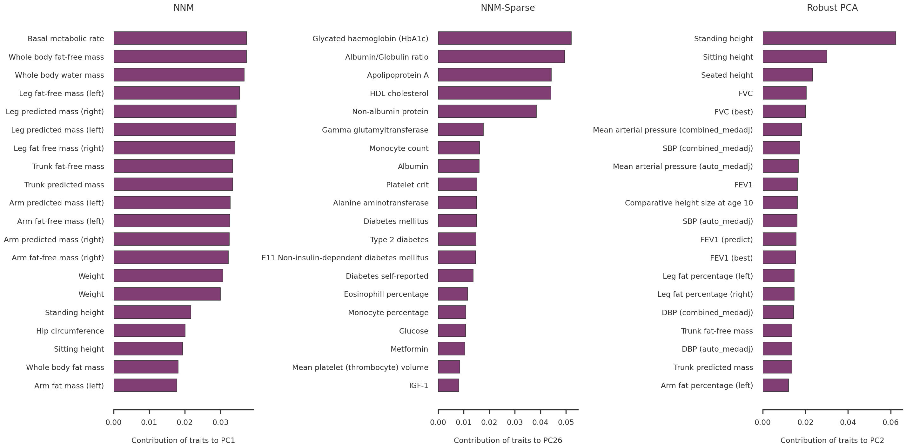
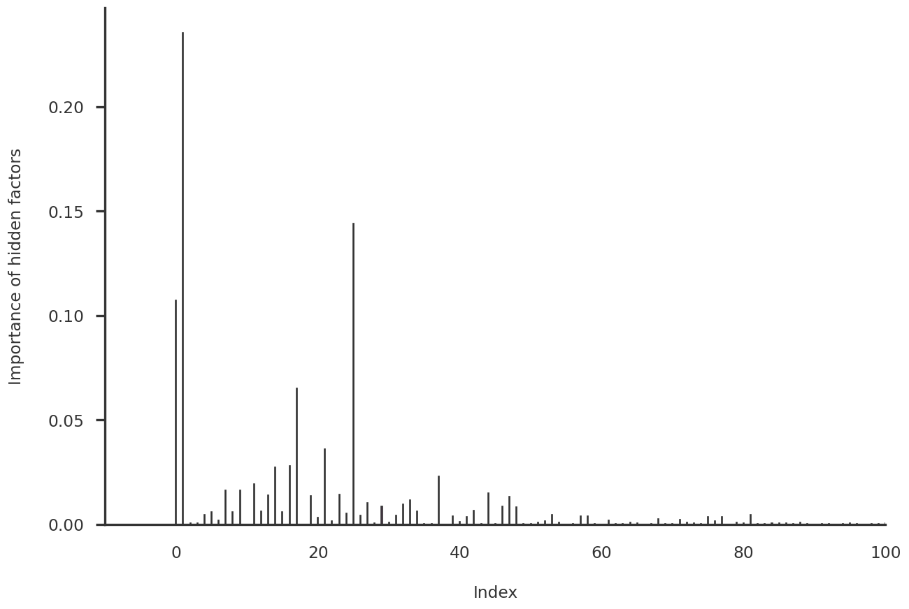
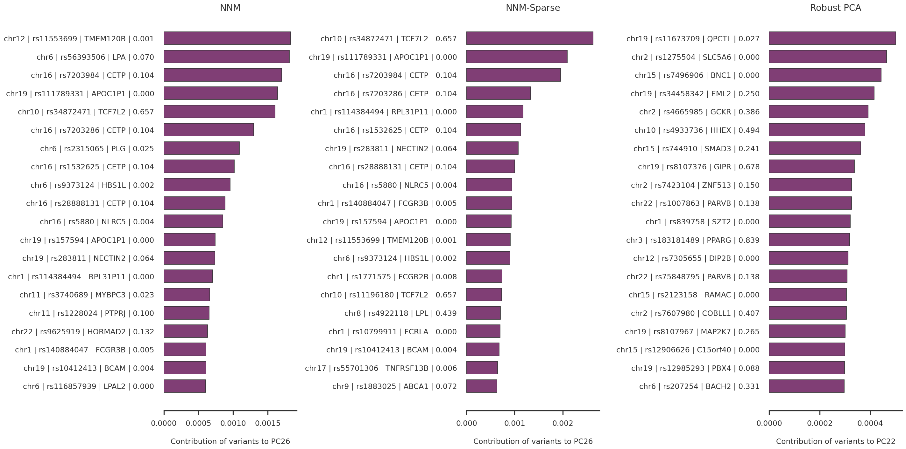
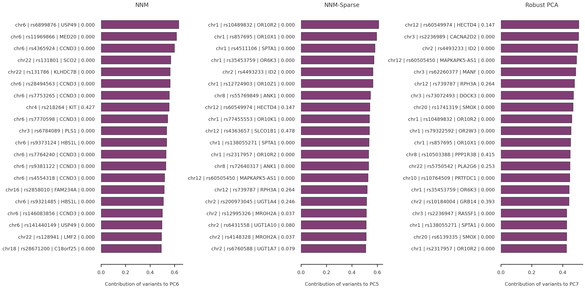
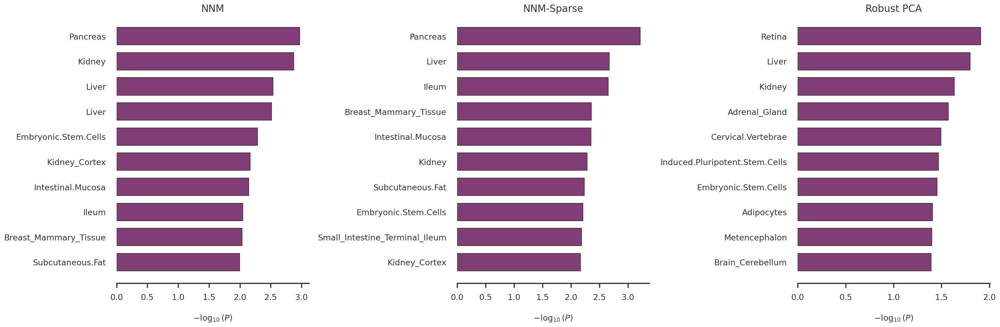

Code
import os
import re
import numpy as np
import pandas as pd
import pickleSaikat Banerjee
October 8, 2024
import matplotlib.pyplot as plt
from pymir import mpl_stylesheet
from pymir import mpl_utils
mpl_stylesheet.banskt_presentation(splinecolor = 'black', dpi = 120, colors = 'kelly')
from matplotlib.gridspec import GridSpec
from sklearn.feature_selection import SelectKBest
from sklearn.feature_selection import f_regression, r_regression, mutual_info_regressiondata_dir = "/gpfs/commons/home/sbanerjee/work/npd/PanUKB/data"
result_dir = "/gpfs/commons/home/sbanerjee/npddata/panukb/results/colormann-svd"
zscore_df = pd.read_pickle(os.path.join(data_dir, f"modselect/zscore_noRx.pkl"))
trait_df = pd.read_pickle(os.path.join(data_dir, f"modselect/traits_all_with_desc.pkl"))
variant_filename = f"{data_dir}/allvar.pruned.closesttss.hugo"
variant_df = pd.read_csv(variant_filename, sep = '\t')
nsample_filename = "/gpfs/commons/home/sbanerjee/work/npd/PanUKB/data/phe2483.SampleN.tsv"
nsample_df = pd.read_csv(nsample_filename, sep = '\t')methods = ["nnm", "nnm-sparse", "rpca"]
method_names = {
"nnm" : "NNM",
"nnm-sparse" : "NNM-Sparse",
"rpca" : "Robust PCA"
}
res_pklfile = {
"nnm": "nnm_model_r155872_iter1000.pkl",
"nnm-sparse": "nnm_sparse_model_r155872_iter1000.pkl",
"rpca": "rpca_model.pkl"
}
pca_comps = dict()
mf_comps = dict()
k = 200
for method in methods:
comps_filename = os.path.join(result_dir, method, "noRx", "pca_comps.pkl")
with open(comps_filename, "rb") as mfile:
pca_comps[method] = pickle.load(mfile)
mf_comps_filename = os.path.join(result_dir, method, "noRx", f"mf_comps_k{k}.pkl")
with open(mf_comps_filename, "rb") as mfile:
mf_comps[method] = pickle.load(mfile)
X = np.array(zscore_df.values.T)
X_cent = X - np.mean(X, axis = 0, keepdims = True)<class 'pandas.core.frame.DataFrame'>
Index: 2110 entries, 0 to 2482
Data columns (total 20 columns):
# Column Non-Null Count Dtype
--- ------ -------------- -----
0 zindex 2110 non-null int64
1 trait_type 2110 non-null object
2 phenocode 2110 non-null object
3 pheno_sex 2110 non-null object
4 coding 267 non-null object
5 modifier 394 non-null object
6 description 2110 non-null object
7 description_more 1408 non-null object
8 coding_description 261 non-null object
9 category 2072 non-null object
10 BIN_QT 2110 non-null object
11 n_cases_EUR 2110 non-null int64
12 n_controls_EUR 1304 non-null float64
13 N 2110 non-null int64
14 Neff 2110 non-null float64
15 filename 2110 non-null object
16 aws_link 2110 non-null object
17 estimates.final.h2_observed 2106 non-null float64
18 long_description 2110 non-null object
19 short_description 2110 non-null object
dtypes: float64(3), int64(3), object(14)
memory usage: 346.2+ KB# focal_disease = {
# "opentarget_name": "triglyceride",
# "opentarget_id": "EFO_0004530",
# "df_query_string": "Triglycerides",
# }
# focal_disease = {
# "opentarget_name": "",
# "opentarget_id": "",
# "df_query_string": "Body mass index (BMI)",
# }
# focal_disease = {
# "opentarget_name": "arthritis",
# "opentarget_id": "HP_0001370",
# "df_query_string": "Rheumatoid arthritis",
# }
# focal_disease = {
# "opentarget_name": "breast",
# "opentarget_id": "EFO_0003869",
# "df_query_string": "Breast cancer",
# }
# focal_disease = {
# "opentarget_name" : "type 1 diabetes mellitus",
# "opentarget_id": "MONDO_0005147",
# "df_query_string": "Type 1 diabetes",
# }
focal_disease = {
"opentarget_name" : "type 2 diabetes mellitus",
"opentarget_id": "MONDO_0005148",
"df_query_string": "Type 2 diabetes",
}
# focal_disease = {
# "opentarget_name": "",
# "opentarget_id": "",
# "df_query_string": "Colon cancer",
# }
# trait_df_noRx.query("description == 'Body mass index (BMI)'")
trait_df_noRx.query(f"description == '{focal_disease['df_query_string']}'")
# trait_df_noRx.query("description == 'Systolic blood pressure, combined automated + manual reading, adjusted by medication'")
# trait_df_noRx.query("description == 'Rheumatoid arthritis'")
# trait_df_noRx.query("description == 'Breast cancer'")
# trait_df_noRx.query("description == 'Cancer of prostate'")| zindex | trait_type | phenocode | pheno_sex | coding | modifier | description | description_more | coding_description | category | BIN_QT | n_cases_EUR | n_controls_EUR | N | Neff | filename | aws_link | estimates.final.h2_observed | long_description | short_description | |
|---|---|---|---|---|---|---|---|---|---|---|---|---|---|---|---|---|---|---|---|---|
| 459 | 460 | phecode | 250.2 | both_sexes | NaN | NaN | Type 2 diabetes | NaN | NaN | endocrine/metabolic | BIN | 22768 | 396181.0 | 418949 | 43061.32254 | phecode-250.2-both_sexes.tsv.bgz | https://pan-ukb-us-east-1.s3.amazonaws.com/sum... | 0.0484 | Type 2 diabetes | Type 2 diabetes |
zindex = trait_df_noRx.query(f"description == '{focal_disease['df_query_string']}'")["zindex"].values[0]
trait_indices = np.array(trait_df_noRx.index)
tidx = np.searchsorted(trait_indices, zindex - 1)
fig = plt.figure(figsize = (24, 12))
axs = dict()
for i, method in enumerate(methods):
axs[method] = fig.add_subplot(1,3,i+1)
n_plot_traits = 20
for method in methods:
loadings, factors, cos2_pheno, cos2_variant, contribution_pheno, contribution_variant = mf_comps[method]
top_factor = np.argsort(cos2_pheno[tidx,:])[::-1][1]
top_factor_score = cos2_pheno[tidx, top_factor]
top_traits_idx = np.argsort(contribution_pheno[:,top_factor])[::-1]
top_traits_name = trait_df_noRx.loc[trait_indices[top_traits_idx]]['short_description'].to_list()
top_traits_score = contribution_pheno[top_traits_idx, top_factor]
xvals = top_traits_score[:n_plot_traits]
yvals = np.arange(n_plot_traits)[::-1]
axs[method].barh(yvals, xvals, align = 'center', height = 0.7)
axs[method].set_yticks(yvals)
axs[method].set_yticklabels(top_traits_name[:n_plot_traits])
for side in ['top', 'right', 'left']:
axs[method].spines[side].set_visible(False)
axs[method].tick_params(left=False)
axs[method].set_xlabel(f"Contribution of traits to PC{top_factor + 1}")
axs[method].set_title(method_names[method])
plt.tight_layout()
plt.show()
fig = plt.figure(figsize = (12, 8))
ax1 = fig.add_subplot(111)
loadings, factors, cos2_pheno, cos2_variant, contribution_pheno, contribution_variant = mf_comps["nnm-sparse"]
xvals = np.arange(cos2_pheno.shape[1])
yvals = cos2_pheno[tidx, :]
ax1.bar(xvals, yvals, align = 'center', width = 0.1)
for side in ['top', 'right']:
ax1.spines[side].set_visible(False)
ax1.tick_params(bottom=False)
ax1.set_ylabel(f"Importance of hidden factors")
ax1.set_xlabel(f"Index")
ax1.set_xlim([-10, 100])
plt.show()
loadings, factors, cos2_pheno, cos2_variant, contribution_pheno, contribution_variant = mf_comps[methods[1]]
top_factor_dict = {i : list() for i in range(cos2_pheno.shape[0])}
for i, trait_name in enumerate(trait_df_noRx['description'].to_list()):
top_factor = np.argsort(cos2_pheno[i, :])[::-1][0]
top_factor_dict[top_factor].append(trait_name)
top_factor_dict{0: ['A08 Viral and other specified intestinal infections',
'B98 Other specified infectious agents as the cause of diseases classified to other chapters',
'D13 Benign neoplasm of other and ill-defined parts of digestive system',
'D22 Melanocytic naevi',
'D23 Other benign neoplasms of skin',
'E66 Obesity',
'G47 Sleep disorders',
'G93 Other disorders of brain',
'H61 Other disorders of external ear',
'H81 Disorders of vestibular function',
'H90 Conductive and sensorineural hearing loss',
'J30 Vasomotor and allergic rhinitis',
'J31 Chronic rhinitis, nasopharyngitis and pharyngitis',
'J93 Pneumothorax',
'K13 Other diseases of lip and oral mucosa',
'K14 Diseases of tongue',
'K40 Inguinal hernia',
'L03 Cellulitis',
'M17 Gonarthrosis [arthrosis of knee]',
'N60 Benign mammary dysplasia',
'N89 Other noninflammatory disorders of vagina',
'N90 Other noninflammatory disorders of vulva and perineum',
'N99 Postprocedural disorders of genito-urinary system, not elsewhere classified',
'O04 Medical abortion',
'R09 Other symptoms and signs involving the circulatory and respiratory systems',
'R45 Symptoms and signs involving emotional state',
'R63 Symptoms and signs concerning food and fluid intake',
'R87 Abnormal findings in specimens from female genital organs',
'S66 Injury of muscle and tendon at wrist and hand level',
'S82 Fracture of lower leg, including ankle',
'T78 Adverse effects, not elsewhere classified',
'W11 Fall on and from ladder',
'X50 Overexertion and strenuous or repetitive movements',
'X59 Exposure to unspecified factor',
'Y42 Hormones and their synthetic substitutes and antagonists, not elsewhere classified',
'Y45 Analgesics, antipyretics and anti-inflammatory drugs',
'Y84 Other medical procedures as the cause of abnormal reaction of the patient, or of later complication, without mention of misadventure at the time of the procedure',
'Z01 Other special examinations and investigations of persons without complaint or reported diagnosis',
'Z12 Special screening examination for neoplasms',
'Z22 Carrier of infectious disease',
'Z48 Other surgical follow-up care',
'Z71 Persons encountering health services for other counselling and medical advice, not elsewhere classified',
'Z75 Problems related to medical facilities and other health care',
'Z94 Transplanted organ and tissue status',
'Z96 Presence of other functional implants',
'Z97 Presence of other devices',
'Viral Enteritis',
'Viral warts & HPV',
'Foreign body injury',
'Symptoms concerning nutrition, metabolism, and development',
'Crushing or internal injury to organs',
'Myeloproliferative disease',
'Benign neoplasm of lip, oral cavity, and pharynx',
'Other benign neoplasm of connective and other soft tissue',
'Benign neoplasm of ovary',
'Anorexia',
'Overweight, obesity and other hyperalimentation',
'Obesity',
'Schizophrenia and other psychotic disorders',
'Agorophobia, social phobia, and panic disorder',
'Sleep disorders',
'Sleep apnea',
'Extrapyramidal disease and abnormal movement disorders',
'Multiple sclerosis',
'Epilepsy',
'Retinal vascular changes and abnomalities',
'Ectropion or entropion',
'Epiphora',
'Disorders of external ear',
'Vertiginous syndromes and other disorders of vestibular system',
'Ill-defined descriptions and complications of heart disease',
'Subarachnoid hemorrhage',
'Polyarteritis nodosa and allied conditions',
'Chronic pharyngitis and nasopharyngitis',
'Allergic rhinitis',
'Empyema and pneumothorax',
'Other dyspnea',
'Diseases of the jaws',
'Diseases and other conditions of the tongue',
'Heartburn',
'Acute gastritis',
'Inguinal hernia',
'Ulceration of the lower GI tract',
'Peritoneal or intestinal adhesions',
'Flatulence',
'Other symptoms involving abdomen and pelvis',
'Nonspecific abnormal findings in stool contents',
'Abnormal findings on mammogram or breast exam',
'Lump or mass in breast',
'Breast conditions, congenital or relating to hormones',
'Pelvic inflammatory disease (PID)',
'Noninflammatory disorders of vagina',
'Noninflammatory disorders of vulva and perineum',
'Dyspareunia',
'Infertility, female',
'Postmenopausal atrophic vaginitis',
'Superficial cellulitis and abscess',
'Cellulitis and abscess of arm/hand',
'Dyschromia and Vitiligo',
'Erythematous conditions',
'Other arthropathies',
'Unspecified monoarthritis',
'Arthropathy NOS',
'Polymyalgia Rheumatica',
'Other disorders of bone and cartilage',
'Malunion and nonunion of fracture',
'Osteoarthrosis',
'Swelling of limb',
'Fracture of tibia and fibula',
'Skull and face fracture and other intercranial injury',
'Injuries to the nervous system',
'Poisoning/allergy of sulfonamides',
'Poisoning by agents primarily affecting the cardiovascular system',
'Cancer code, self-reported',
'Non-cancer illness code, self-reported',
'Non-cancer illness code, self-reported',
'Non-cancer illness code, self-reported',
'Non-cancer illness code, self-reported',
'Non-cancer illness code, self-reported',
'Non-cancer illness code, self-reported',
'Non-cancer illness code, self-reported',
'Non-cancer illness code, self-reported',
'Non-cancer illness code, self-reported',
'Non-cancer illness code, self-reported',
'Non-cancer illness code, self-reported',
'Non-cancer illness code, self-reported',
'Non-cancer illness code, self-reported',
'Non-cancer illness code, self-reported',
'Non-cancer illness code, self-reported',
'Non-cancer illness code, self-reported',
'Non-cancer illness code, self-reported',
'Non-cancer illness code, self-reported',
'Non-cancer illness code, self-reported',
'Non-cancer illness code, self-reported',
'Non-cancer illness code, self-reported',
'Non-cancer illness code, self-reported',
'Non-cancer illness code, self-reported',
'Non-cancer illness code, self-reported',
'Non-cancer illness code, self-reported',
'Non-cancer illness code, self-reported',
'Non-cancer illness code, self-reported',
'Non-cancer illness code, self-reported',
'Non-cancer illness code, self-reported',
'Non-cancer illness code, self-reported',
'Non-cancer illness code, self-reported',
'Non-cancer illness code, self-reported',
'Non-cancer illness code, self-reported',
'Non-cancer illness code, self-reported',
'Non-cancer illness code, self-reported',
'Non-cancer illness code, self-reported',
'Non-cancer illness code, self-reported',
'Non-cancer illness code, self-reported',
'Non-cancer illness code, self-reported',
'Non-cancer illness code, self-reported',
'Non-cancer illness code, self-reported',
'Non-cancer illness code, self-reported',
'Treatment/medication code',
'Treatment/medication code',
'Treatment/medication code',
'Treatment/medication code',
'Treatment/medication code',
'Treatment/medication code',
'Treatment/medication code',
'Treatment/medication code',
'Treatment/medication code',
'Treatment/medication code',
'Treatment/medication code',
'Treatment/medication code',
'Treatment/medication code',
'Treatment/medication code',
'Treatment/medication code',
'Treatment/medication code',
'Treatment/medication code',
'Treatment/medication code',
'Treatment/medication code',
'Treatment/medication code',
'Treatment/medication code',
'Treatment/medication code',
'Treatment/medication code',
'Treatment/medication code',
'Treatment/medication code',
'Treatment/medication code',
'Treatment/medication code',
'Treatment/medication code',
'Treatment/medication code',
'Treatment/medication code',
'Treatment/medication code',
'Treatment/medication code',
'Treatment/medication code',
'Treatment/medication code',
'Treatment/medication code',
'Treatment/medication code',
'Treatment/medication code',
'Treatment/medication code',
'Treatment/medication code',
'Treatment/medication code',
'Illnesses of father',
'Illnesses of father',
'Illnesses of mother',
'Illnesses of mother',
'Oestradiol',
'Rheumatoid factor',
'Portion size',
'Duration of strenuous sports',
'Low calorie drink intake',
'Squash intake',
'Dairy smoothie intake',
'Intake of sugar added to coffee',
'Standard tea intake',
'Green tea intake',
'Other tea intake',
'Intake of sugar added to tea',
'Milk intake',
'Flavoured milk intake',
'Hot chocolate intake',
'Fortified wine intake',
'Sweetened cereal intake',
'Plain cereal intake',
'Bran cereal intake',
'Whole-wheat cereal intake',
'Other cereal intake',
'Bap intake',
'Bread roll intake',
'Garlic bread intake',
'Number of bread rolls with butter/margarine',
'Number of crackers/crispbreads with butter/margarine',
'Double crust pastry intake',
'Pizza intake',
'Yorkshire pudding intake',
'Danish pastry intake',
'Milk-based pudding intake',
'Cheesecake intake',
'Other dessert intake',
'Chocolate bar intake',
'Sweets intake',
'Chocolate-covered biscuits intake',
'Chocolate biscuits intake',
'Cereal bar intake',
'Other sweets intake',
'Salted nuts intake',
'Unsalted nuts intake',
'Seeds intake',
'Crisp intake',
'Other savoury snack intake',
'Wholemeal pasta intake',
'Brown rice intake',
'Low fat hard cheese intake',
'Mozzarella intake',
'Other cheese intake',
'Whole egg intake',
'Omelette intake',
'Eggs in sandwiches intake',
'Beef intake',
'Pork intake',
'Lamb intake',
'Crumbed or deep-fried poultry intake',
'Bacon intake',
'Breaded fish intake',
'Battered fish intake',
'White fish intake',
'Prawns intake',
'Baked bean intake',
'Mashed potato intake',
'Mixed vegetable intake',
'Broad bean intake',
'Green bean intake',
'Broccoli intake',
'Leek intake',
'Parsnip intake',
'Pea intake',
'Sprouts intake',
'Sweetcorn intake',
'Turnip/swede intake',
'Watercress intake',
'Dried fruit intake',
'Mixed fruit intake',
'Cherry intake',
'Peach/nectarine intake',
'Plum intake',
'Time spent doing moderate physical activity',
'Time spent doing light physical activity',
'Believed safe to perform brain MRI scan',
'Believed safe to perform abdominal MRI scan',
'Past tobacco smoking',
'Number of operations, self-reported',
'Tea intake',
'Comparative body size at age 10',
'Mean time to correctly identify matches',
'Hour-of-day questionnaire completed',
'Duration of questionnaire',
'Cascot confidence score',
'Frequency of memory loss due to drinking alcohol in last year',
'Age when known person last commented about drinking habits',
'Maximum frequency of taking cannabis',
'Age when last took cannabis',
'Age when first had unusual or psychotic experience',
'Distress caused by unusual or psychotic experiences',
'Frequency of unusual or psychotic experiences in past year',
'Number of times self-harmed',
'Longest period of mania or irritability',
'Body mass index (BMI)',
'Weight',
'Pulse wave Arterial Stiffness index',
'Age at recruitment',
'Age hayfever or allergic rhinitis diagnosed by doctor',
'Age asthma diagnosed by doctor',
'Plays computer games',
'Years of cough on most days',
'Years of bringing up phlegm/sputum/mucus on most days',
'Period spent working mix of day and night shifts',
'Usual length of each night shift during mixed shift periods',
'Number of night shifts worked monthly during mixed shift periods',
'Consecutive night shifts during mixed shift periods',
'Rest days during mixed shift periods',
'Number of gap periods',
'Weight',
'Body fat percentage',
'Whole body fat mass',
'Whole body fat-free mass',
'Whole body water mass',
'Body mass index (BMI)',
'Basal metabolic rate',
'Impedance of whole body',
'Impedance of leg (right)',
'Impedance of leg (left)',
'Impedance of arm (right)',
'Impedance of arm (left)',
'Leg fat mass (right)',
'Leg fat-free mass (right)',
'Leg predicted mass (right)',
'Leg fat mass (left)',
'Leg fat-free mass (left)',
'Leg predicted mass (left)',
'Arm fat percentage (right)',
'Arm fat mass (right)',
'Arm fat-free mass (right)',
'Arm predicted mass (right)',
'Arm fat percentage (left)',
'Arm fat mass (left)',
'Arm fat-free mass (left)',
'Arm predicted mass (left)',
'Trunk fat percentage',
'Trunk fat mass',
'Trunk fat-free mass',
'Trunk predicted mass',
'Relative age of first facial hair',
'Relative age voice broke',
'Years since last breast cancer screening / mammogram',
'Age when periods started (menarche)',
'Number of unsuccessful stop-smoking attempts',
'Likelihood of resuming smoking',
'Creatinine (enzymatic) in urine',
'Potassium in urine',
'Ankle spacing width',
'Weight, manual entry',
'Wants to stop smoking',
'Smoking compared to 10 years previous',
'Age last used hormone-replacement therapy (HRT)',
'Age angina diagnosed',
'Frequency of other exercises in last 4 weeks',
'Duration of other exercises',
'Lifetime number of same-sex sexual partners',
'Age when last ate meat',
'Length of menstrual cycle',
'Time since last prostate specific antigen (PSA) test',
'Number of stillbirths',
'Number of spontaneous miscarriages',
'Number of incorrect matches in round',
'Age emphysema/chronic bronchitis diagnosed',
'Time to complete round',
'Age at death',
'Age deep-vein thrombosis (DVT, blood clot in leg) diagnosed',
'Age stroke diagnosed',
'Ankle spacing width (left)',
'Ankle spacing width (right)',
'Number of triplets attempted (left)',
'Number of triplets attempted (right)',
'Time to answer',
'Average monthly intake of other alcoholic drinks',
'Age cataract diagnosed',
'Waist circumference',
'Hip circumference',
'6mm asymmetry angle (right)',
'Index of best refractometry result (right)',
'3mm index of best keratometry results (right)',
'6mm index of best keratometry results (right)',
'Index of best refractometry result (left)',
'3mm index of best keratometry results (left)',
'6mm index of best keratometry results (left)',
'ECG, heart rate',
'Maximum heart rate during fitness test',
'Length of time at current address',
'Time employed in main current job',
'Length of working week for main job',
'Number of days/week walked 10+ minutes',
'Frequency of strenuous sports in last 4 weeks'],
1: ['E11 Non-insulin-dependent diabetes mellitus',
'E14 Unspecified diabetes mellitus',
'E78 Disorders of lipoprotein metabolism and other lipidaemias',
'F17 Mental and behavioural disorders due to use of tobacco',
'G56 Mononeuropathies of upper limb',
'I20 Angina pectoris',
'I21 Acute myocardial infarction',
'I25 Chronic ischaemic heart disease',
'I50 Heart failure',
'I51 Complications and ill-defined descriptions of heart disease',
'J44 Other chronic obstructive pulmonary disease',
'K21 Gastro-oesophageal reflux disease',
'K29 Gastritis and duodenitis',
'K44 Diaphragmatic hernia',
'K52 Other non-infective gastro-enteritis and colitis',
'L91 Hypertrophic disorders of skin',
'M13 Other arthritis',
'M15 Polyarthrosis',
'M19 Other arthrosis',
'N17 Acute renal failure',
'O80 Single spontaneous delivery',
'R06 Abnormalities of breathing',
'R07 Pain in throat and chest',
'V18 Pedal cyclist injured in noncollision transport accident',
'W00 Fall on same level involving ice and snow',
'Z72 Problems related to lifestyle',
'Z82 Family history of certain disabilities and chronic diseases leading to disablement',
'Z86 Personal history of certain other diseases',
'Z88 Personal history of allergy to drugs, medicaments and biologocal substances',
'Diabetes mellitus',
'Type 2 diabetes',
'Disorders of lipoid metabolism',
'Hyperlipidemia',
'Hypercholesterolemia',
'Other mental disorder',
'Substance addiction and disorders',
'Tobacco use disorder',
"Parkinson's disease",
'Other headache syndromes',
'Other peripheral nerve disorders',
'Hypertension',
'Essential hypertension',
'Hypertensive heart and/or renal disease',
'Hypertensive chronic kidney disease',
'Ischemic Heart Disease',
'Unstable angina (intermediate coronary syndrome)',
'Myocardial infarction',
'Angina pectoris',
'Coronary atherosclerosis',
'Other chronic ischemic heart disease, unspecified',
'Nonspecific chest pain',
'Precordial pain',
'Arrhythmia (cardiac) NOS',
'Congestive heart failure; nonhypertensive',
'Heart failure NOS',
'Peripheral vascular disease, unspecified',
'Chronic airway obstruction',
'Chronic bronchitis',
'Obstructive chronic bronchitis',
'Other symptoms of respiratory system',
'Shortness of breath',
'Respiratory abnormalities',
'Other diseases of respiratory system, not elsewhere classified',
'Other diseases of respiratory system, NEC',
'Diseases of esophagus',
'Esophagitis, GERD and related diseases',
'GERD',
'Peptic ulcer (excl. esophageal)',
'Dysphagia',
'Gastritis and duodenitis',
'Duodenitis',
'Other specified gastritis',
'Diaphragmatic hernia',
'Noninfectious gastroenteritis',
'Renal failure',
'Acute renal failure',
'Benign neoplasm of breast',
'Normal delivery',
'Rheumatoid arthritis and other inflammatory polyarthropathies',
'Osteoarthrosis NOS',
'Pain in joint',
'Back pain',
'Nausea and vomiting',
'Poisoning by antibiotics',
'Allergy/adverse effect of penicillin',
'Non-cancer illness code, self-reported',
'Non-cancer illness code, self-reported',
'Non-cancer illness code, self-reported',
'Non-cancer illness code, self-reported',
'Non-cancer illness code, self-reported',
'Non-cancer illness code, self-reported',
'Non-cancer illness code, self-reported',
'Non-cancer illness code, self-reported',
'Non-cancer illness code, self-reported',
'Non-cancer illness code, self-reported',
'Non-cancer illness code, self-reported',
'Non-cancer illness code, self-reported',
'Non-cancer illness code, self-reported',
'Non-cancer illness code, self-reported',
'Non-cancer illness code, self-reported',
'Non-cancer illness code, self-reported',
'Non-cancer illness code, self-reported',
'Non-cancer illness code, self-reported',
'Non-cancer illness code, self-reported',
'Non-cancer illness code, self-reported',
'Non-cancer illness code, self-reported',
'Non-cancer illness code, self-reported',
'Non-cancer illness code, self-reported',
'Non-cancer illness code, self-reported',
'Non-cancer illness code, self-reported',
'Non-cancer illness code, self-reported',
'Non-cancer illness code, self-reported',
'Non-cancer illness code, self-reported',
'Treatment/medication code',
'Treatment/medication code',
'Treatment/medication code',
'Treatment/medication code',
'Treatment/medication code',
'Treatment/medication code',
'Treatment/medication code',
'Treatment/medication code',
'Treatment/medication code',
'Treatment/medication code',
'Treatment/medication code',
'Treatment/medication code',
'Treatment/medication code',
'Treatment/medication code',
'Treatment/medication code',
'Treatment/medication code',
'Treatment/medication code',
'Treatment/medication code',
'Treatment/medication code',
'Treatment/medication code',
'Treatment/medication code',
'Treatment/medication code',
'Treatment/medication code',
'Treatment/medication code',
'Treatment/medication code',
'Illnesses of father',
'Illnesses of father',
'Illnesses of father',
'Illnesses of father',
'Illnesses of father',
'Illnesses of father',
'Illnesses of mother',
'Illnesses of mother',
'Illnesses of mother',
'Illnesses of mother',
'Illnesses of mother',
'Illnesses of mother',
'Alanine aminotransferase',
'C-reactive protein',
'Gamma glutamyltransferase',
'SHBG',
'Urate',
'Retinol',
'Alcohol',
'Drinking water intake',
'Orange juice intake',
'Grapefruit juice intake',
'Pure fruit/vegetable juice intake',
'Fruit smoothie intake',
'Filtered coffee intake',
'Cappuccino intake',
'Latte intake',
'Espresso intake',
'Rooibos tea intake',
'Herbal tea intake',
'Red wine intake',
'Rose wine intake',
'White wine intake',
'Porridge intake',
'Muesli intake',
'Oat crunch intake',
'Intake of sugar added to cereal',
'Baguette intake',
'Frequency of light DIY in last 4 weeks',
'Naan bread intake',
'Crispbread intake',
'Oatcakes intake',
'Other bread intake',
'Number of baguettes with butter/margarine',
'Number of other bread types with butter/margarine',
'Single crust pastry intake',
'Crumble intake',
'Croissant intake',
'Ice-cream intake',
'Other milk-based pudding intake',
'Fruitcake intake',
'Cake intake',
'Sponge pudding intake',
'Milk chocolate intake',
'Dark chocolate intake',
'Chocolate sweet intake',
'Sweet biscuits intake',
'Salted peanuts intake',
'Olives intake',
'Powdered/instant soup intake',
'Canned soup intake',
'Homemade soup intake',
'White pasta intake',
'White rice intake',
'Couscous intake',
'Hard cheese intake',
'Soft cheese intake',
'Blue cheese intake',
'Low fat cheese spread intake',
'Sausage intake',
'Ham intake',
'Liver intake',
'Frequency of friend/family visits',
'Tinned tuna intake',
'Oily fish intake',
'Pulses intake',
'Vegetable pieces intake',
'Side salad intake',
'Avocado intake',
'Butternut squash intake',
'Cabbage/kale intake',
'Courgette intake',
'Garlic intake',
'Lettuce intake',
'Mushroom intake',
'Spinach intake',
'Sweet potato intake',
'Tinned tomato intake',
'Other vegetables intake',
'Stewed fruit intake',
'Prune intake',
'Apple intake',
'Berry intake',
'Grapefruit intake',
'Mango intake',
'Melon intake',
'Orange intake',
'Satsuma intake',
'Pear intake',
'Pineapple intake',
'Other fruit intake',
'Time spent watching television (TV)',
'Time spent using computer',
'Drive faster than motorway speed limit',
'Difference in mobile phone use compared to two years previously',
'Nap during day',
'Sleeplessness / insomnia',
'QRS duration',
'Smoking/smokers in household',
'Exposure to tobacco smoke at home',
'Exposure to tobacco smoke outside home',
'Salad / raw vegetable intake',
'Place of birth in UK - east co-ordinate',
'Fresh fruit intake',
'Dried fruit intake',
'Number of self-reported non-cancer illnesses',
'Poultry intake',
'Number of treatments/medications taken',
'Lamb/mutton intake',
'Cheese intake',
'Bread intake',
'Cereal intake',
'Hot drink temperature',
'Variation in diet',
'Alcohol intake frequency.',
'Average weekly red wine intake',
'Average weekly champagne plus white wine intake',
'Average weekly fortified wine intake',
'Alcohol intake versus 10 years previously',
'Comparative height size at age 10',
"Father's age at death",
"Mother's age",
'Number of full brothers',
'Number of full sisters',
'Interpolated Age of participant when non-cancer illness first diagnosed',
'Sitting height',
'Fluid intelligence score',
'Prospective memory result',
'Birth weight',
'Home location at assessment - east co-ordinate (rounded)',
'Number of diet questionnaires completed',
'Number of fluid intelligence questions attempted within time limit',
'Forced expiratory volume in 1-second (FEV1), Best measure',
'Forced vital capacity (FVC), Best measure',
'Forced expiratory volume in 1-second (FEV1), predicted',
'Forced expiratory volume in 1-second (FEV1), predicted percentage',
'Frequency of drinking alcohol',
'Ever taken cannabis',
'Someone to take to doctor when needed as a child',
'Been in a confiding relationship as an adult',
'Able to pay rent/mortgage as an adult',
'Able to confide',
'Age first had sexual intercourse',
'Overall health rating',
'Year of birth',
'Year ended full time education',
'Year job started',
'Year job ended',
'Work hours per week - exact value',
'Year gap started',
'Year gap ended',
'Home location - east co-ordinate (rounded)',
'Leg fat percentage (right)',
'Leg fat percentage (left)',
'Most recent bowel cancer screening',
'Birth weight of first child',
'Age at first live birth',
'Age at last live birth',
'Age started oral contraceptive pill',
'Age when last used oral contraceptive pill',
'Age at hysterectomy',
'Age started smoking in former smokers',
'Number of cigarettes previously smoked daily',
'Age stopped smoking',
"Father's age",
'Sodium in urine',
'Forced vital capacity (FVC)',
'Forced expiratory volume in 1-second (FEV1)',
'Peak expiratory flow (PEF)',
'Seating box height',
'Year of birth',
'Age started smoking in current smokers',
'Time from waking to first cigarette',
'Ever tried to stop smoking',
"Mother's age at death",
'Age started hormone-replacement therapy (HRT)',
'Age at menopause (last menstrual period)',
'Year immigrated to UK (United Kingdom)',
'Number of pregnancy terminations',
'Age of primiparous women at birth of child',
'Age at bilateral oophorectomy (both ovaries removed)',
'Age heart attack diagnosed',
'Number of correct matches in round',
'Number of times snap-button pressed',
'Spells in hospital',
'Pulse wave peak to peak time',
'Maximum digits remembered correctly',
'Average monthly red wine intake',
'Average monthly champagne plus white wine intake',
'Average monthly fortified wine intake',
'Health satisfaction',
'Financial situation satisfaction',
'Hand grip strength (left)',
'Private healthcare',
'Hand grip strength (right)',
'Noisy workplace',
'Standing height',
'Seated height',
'6mm asymmetry index (right)',
'Longest period of unenthusiasm / disinterest',
'Leg pain on walking : action taken',
'ECG, load',
'ECG, phase time',
'ECG, number of stages in a phase',
'Maximum workload during fitness test',
'Number of trend entries',
'Duration of fitness test',
'Number in household',
'Number of vehicles in household',
'Average total household income before tax',
'Frequency of travelling from home to job workplace',
'Job involves mainly walking or standing',
'Job involves heavy manual or physical work',
'Job involves shift work',
'Age completed full time education',
'Usual walking pace',
'Frequency of stair climbing in last 4 weeks',
'Duration walking for pleasure',
'Number of cigarettes smoked daily, combined previous and current smoking',
'pheno 48 / pheno 49'],
2: ['F32 Depressive episode',
'G43 Migraine',
'G57 Mononeuropathies of lower limb',
'G62 Other polyneuropathies',
'K42 Umbilical hernia',
'K43 Ventral hernia',
'K58 Irritable bowel syndrome',
'K59 Other functional intestinal disorders',
'K60 Fissure and fistula of anal and rectal regions',
'K61 Abscess of anal and rectal regions',
'M18 Arthrosis of first carpometacarpal joint',
'M22 Disorders of patella',
'M75 Shoulder lesions',
'M79 Other soft tissue disorders, not elsewhere classified',
'N39 Other disorders of urinary system',
'R10 Abdominal and pelvic pain',
'R19 Other symptoms and signs involving the digestive system and abdomen',
'Z60 Problems related to social environment',
'Bacterial enteritis',
'Complications of surgical and medical procedures',
'Chemotherapy',
'Migraine',
'Inflammatory and toxic neuropathy',
'Hearing loss',
'Elevated blood pressure reading without diagnosis of hypertension',
'Cough',
'Abnormal findings examination of lungs',
'Abdominal hernia',
'Umbilical hernia',
'Ventral hernia',
'Symptoms involving digestive system',
'Constipation',
'Functional digestive disorders',
'Irritable Bowel Syndrome',
'Anal and rectal conditions',
'Hematemesis',
'Urinary incontinence',
'Frequency of urination and polyuria',
'stress incontinence, female',
'Other inflammatory spondylopathies',
'Peripheral enthesopathies and allied syndromes',
'Pain in limb',
'Abdominal pain',
'Malaise and fatigue',
'Non-cancer illness code, self-reported',
'Non-cancer illness code, self-reported',
'Non-cancer illness code, self-reported',
'Non-cancer illness code, self-reported',
'Treatment/medication code',
'Treatment/medication code',
'Treatment/medication code',
'Treatment/medication code',
'Treatment/medication code',
'Treatment/medication code',
'Treatment/medication code',
'Treatment/medication code',
'Treatment/medication code',
'Treatment/medication code',
'Treatment/medication code',
'Treatment/medication code',
'Treatment/medication code',
'Treatment/medication code',
'Treatment/medication code',
'Treatment/medication code',
'Treatment/medication code',
'Treatment/medication code',
'Treatment/medication code',
'Treatment/medication code',
'Treatment/medication code',
'Treatment/medication code',
'Treatment/medication code',
'Treatment/medication code',
'Treatment/medication code',
'Illnesses of father',
'Illnesses of father',
'Illnesses of father',
'Illnesses of father',
'Illnesses of mother',
'Illnesses of mother',
'Illnesses of mother',
'Illnesses of mother',
'Albumin',
'Fizzy drink intake',
'Intake of artificial sweetener added to tea',
'Weekly usage of mobile phone in last 3 months',
'Sleep duration',
'P duration',
'Current tobacco smoking',
'Oily fish intake',
'Salt added to food',
'Average weekly spirits intake',
'Frequency of unenthusiasm / disinterest in last 2 weeks',
'Frequency of tiredness / lethargy in last 2 weeks',
'Falls in the last year',
'Weight change compared with 1 year ago',
'Age high blood pressure diagnosed',
'Number of cigarettes currently smoked daily (current cigarette smokers)',
'Diastolic blood pressure, automated reading',
'Systolic blood pressure, automated reading',
'Tinnitus',
'Tinnitus severity/nuisance',
'Loud music exposure frequency',
'Non-cancer illness year/age first occurred',
'Systolic blood pressure, manual reading',
'Diastolic blood pressure, automated reading, adjusted by medication',
'Diastolic blood pressure, combined automated + manual reading',
'Diastolic blood pressure, combined automated + manual reading, adjusted by medication',
'Diastolic blood pressure, manual reading, adjusted by medication',
'Mean arterial pressure, automated reading',
'Mean arterial pressure, automated reading, adjusted by medication',
'Mean arterial pressure, combined automated + manual reading',
'Mean arterial pressure, combined automated + manual reading, adjusted by medication',
'Mean arterial pressure, manual reading',
'Mean arterial pressure, manual reading, adjusted by medication',
'Multi-site chronic pain',
'Pulse pressure, automated reading',
'Pulse pressure, automated reading, adjusted by medication',
'Pulse pressure, combined automated + manual reading',
'Pulse pressure, combined automated + manual reading, adjusted by medication',
'Pulse pressure, manual reading',
'Pulse pressure, manual reading, adjusted by medication',
'Systolic blood pressure, automated reading, adjusted by medication',
'Systolic blood pressure, combined automated + manual reading',
'Systolic blood pressure, combined automated + manual reading, adjusted by medication',
'Systolic blood pressure, manual reading, adjusted by medication'],
3: ['W01 Fall on same level from slipping, tripping and stumbling',
'W18 Other fall on same level',
'Dizziness and giddiness (Light-headedness and vertigo)',
'Osteoporosis, osteopenia and pathological fracture',
'Osteoporosis',
'Osteoporosis NOS',
'Symptoms involving nervous and musculoskeletal systems',
'Fracture of lower limb',
'Fracture of neck of femur',
'Fracture of unspecified part of femur',
'Fracture of ankle and foot',
'Fracture of upper limb',
'Fracture of humerus',
'Fracture of radius and ulna',
'Fracture of hand or wrist',
'Non-cancer illness code, self-reported',
'Non-cancer illness code, self-reported',
'Treatment/medication code',
'Instant coffee intake',
'Length of mobile phone use',
'Hands-free device/speakerphone use with mobile phone in last 3 month',
'Microalbumin in urine',
'Heel Broadband ultrasound attenuation, direct entry',
'Heel quantitative ultrasound index (QUI), direct entry',
'Heel bone mineral density (BMD)',
'Heel broadband ultrasound attenuation (left)',
'Heel quantitative ultrasound index (QUI), direct entry (left)',
'Heel bone mineral density (BMD) (left)',
'Heel bone mineral density (BMD) T-score, automated (left)',
'Heel broadband ultrasound attenuation (right)',
'Heel quantitative ultrasound index (QUI), direct entry (right)',
'Heel bone mineral density (BMD) (right)',
'Heel bone mineral density (BMD) T-score, automated (right)',
'Heel bone mineral density (BMD) T-score, automated'],
4: ['Z02 Examination and encounter for administrative purposes',
'Z04 Examination and observation for other reasons',
'Total bilirubin',
'Triglycerides',
'Red blood cell (erythrocyte) count',
'Haemoglobin concentration',
'Mean corpuscular haemoglobin concentration',
'Reticulocyte percentage',
'Reticulocyte count',
'Mean reticulocyte volume',
'Mean sphered cell volume',
'High light scatter reticulocyte percentage',
'High light scatter reticulocyte count',
'Indirect bilirubin'],
5: ['Direct bilirubin',
'Mean corpuscular volume',
'Mean corpuscular haemoglobin'],
6: ['N18 Chronic renal failure',
'Other diseases of blood and blood-forming organs',
'Glomerulonephritis',
'Chronic renal failure [CKD]',
'Cystatin C',
'Non-oily fish intake',
'Coffee intake',
'Estimated glomerular filtration rate, cystain C',
'Estimated glomerular filtration rate, serum creatinine + cystain C'],
7: ['I24 Other acute ischaemic heart diseases',
'T82 Complications of cardiac and vascular prosthetic devices, implants and grafts',
'Z95 Presence of cardiac and vascular implants and grafts',
'Other acute and subacute forms of ischemic heart disease',
'Syncope and collapse',
'Complications of cardiac/vascular device, implant, and graft',
'Treatment/medication code',
'Treatment/medication code',
'Treatment/medication code',
'Treatment/medication code',
'Treatment/medication code'],
8: ['A09 Diarrhoea and gastro-enteritis of presumed infectious origin',
'D64 Other anaemias',
'H91 Other hearing loss',
'I84 Haemorrhoids',
'M47 Spondylosis',
'T81 Complications of procedures, not elsewhere classified',
'Y83 Surgical operation and other surgical procedures as the cause of abnormal reaction of the patient, or of later complication, without mention of misadventure at the time of the procedure',
'Z03 Medical observation and evaluation for suspected diseases and conditions',
'Z13 Special screening examination for other diseases and disorders',
'Z53 Persons encountering health services for specifie procedures, not carried out',
'Z99 Dependence on enabling machines and devices, not elsewhere classified',
'Intestinal infection',
'Injury, NOS',
'Effects of other external causes',
'Other ill-defined and unknown causes of morbidity and mortality',
'Other anemias',
'Abnormal heart sounds',
'Hemorrhoids',
'Respiratory failure, insufficiency, arrest',
'Spondylosis and allied disorders',
'Cervicalgia',
'Complications of transplants and reattached limbs',
'Complication due to other implant and internal device',
'Opiates and related narcotics causing adverse effects in therapeutic use',
'Ventricular rate',
'Processed meat intake',
'Immature reticulocyte fraction'],
9: ['B96 Other bacterial agents as the cause of diseases classified to other chapters',
'J18 Pneumonia, organism unspecified',
'Z87 Personal history of other diseases and conditions',
'Z92 Personal history of medical treatment',
'Pneumonia',
'Non-cancer illness code, self-reported',
'Urea',
'Creatinine',
'Scone intake',
'Poultry intake',
'Estimated glomerular filtration rate, serum creatinine'],
10: ['O32 Maternal care for known or suspected malpresentation of foetus',
'O72 Postpartum haemorrhage',
'Z34 Supervision of normal pregnancy'],
11: ['Apolipoprotein B',
'Cholesterol',
'LDL direct',
'Total protein',
'LDL direct, adjusted by medication'],
12: ['Platelet count',
'Platelet crit',
'Mean platelet (thrombocyte) volume',
'Platelet distribution width'],
13: ['C43 Malignant melanoma of skin',
'C44 Other malignant neoplasms of skin',
'N64 Other disorders of breast',
'R93 Abnormal findings on diagnostic imaging of other body structures',
'Skin cancer',
'Melanomas of skin, dx or hx',
'Other non-epithelial cancer of skin',
'Abnormal findings on exam of gastrointestinal tract/ abdominal area',
'Nephritis; nephrosis; renal sclerosis',
'Other nonmalignant breast conditions',
'Other local infections of skin and subcutaneous tissue',
'Cancer code, self-reported',
'Cancer code, self-reported',
'Treatment/medication code',
'Skin colour',
'Ease of skin tanning',
'Childhood sunburn occasions',
'Facial ageing',
'Age started wearing glasses or contact lenses',
'Use of sun/uv protection',
'Frequency of solarium/sunlamp use'],
14: ['Nasal polyps',
'Non-cancer illness code, self-reported',
'Eosinophill count',
'Eosinophill percentage',
'Age hay fever, rhinitis or eczema diagnosed',
'Age asthma diagnosed'],
15: ['R01 Cardiac murmurs and other cardiac sounds',
'Other forms of chronic heart disease',
'Renal failure NOS',
'Non-cancer illness code, self-reported',
'6mm asymmetry index (left)',
'6mm regularity index (right)'],
16: ['3mm weak meridian (left)',
'6mm weak meridian (left)',
'6mm weak meridian (right)',
'3mm weak meridian (right)',
'3mm strong meridian (right)',
'6mm strong meridian (right)',
'6mm strong meridian (left)',
'3mm strong meridian (left)'],
17: ['R03 Abnormal blood-pressure reading, without diagnosis',
'R60 Oedema, not elsewhere classified',
'Noninfectious disorders of lymphatic channels',
'Bacterial pneumonia',
'Pneumococcal pneumonia',
'Bronchiectasis',
'Pleurisy; pleural effusion',
'Rash and other nonspecific skin eruption',
'Edema',
'HDL cholesterol'],
18: ['Non-cancer illness code, self-reported',
'Treatment/medication code',
'FEV1/FVC ratio'],
19: ['A41 Other septicaemia',
'B37 Candidiasis',
'B95 Streptococcus and staphylococcus as the cause of diseases classified to other chapters',
'C77 Secondary and unspecified malignant neoplasm of lymph nodes',
'C78 Secondary malignant neoplasm of respiratory and digestive organs',
'C79 Secondary malignant neoplasm of other sites',
'C80 Malignant neoplasm without specification of site',
'K56 Paralytic ileus and intestinal obstruction without hernia',
'K66 Other disorders of peritoneum',
'K91 Postprocedural disorders of digestive system, not elsewhere classified',
'R50 Fever of unknown origin',
'Y43 Primarily systemic agents',
'Z43 Attention to artificial openings',
'Z45 Adjustment and management of implanted device',
'Z51 Other medical care',
'Z85 Personal history of malignant neoplasm',
'Z90 Acquired absence of organs, not elsewhere classified',
'Z93 Artificial opening status',
'Z98 Other postsurgical states',
'Septicemia',
'Bacterial infection NOS',
'Staphylococcus infections',
'Streptococcus infection',
'E. coli',
'Postoperative infection',
'Other tests',
'Candidiasis',
'Colon cancer',
'Malignant neoplasm of rectum, rectosigmoid junction, and anus',
'Malignant neoplasm of other and ill-defined sites within the digestive organs and peritoneum',
'Cancer, suspected or other',
'Malignant neoplasm, other',
'Secondary malignant neoplasm',
'Secondary malignancy of lymph nodes',
'Secondary malignancy of respiratory organs',
'Secondary malignant neoplasm of digestive systems',
'Secondary malignant neoplasm of liver',
'Secondary malignancy of brain/spine',
'Secondary malignancy of bone',
'Neoplasm of uncertain behavior',
'Hypovolemia',
'Other disorders of metabolism',
'Ileostomy status',
'Intestinal obstruction without mention of hernia',
'Other intestinal obstruction',
'Other disorders of peritoneum',
'Peritoneal adhesions (postoperative) (postinfection)',
'Pyelonephritis',
'Fever of unknown origin',
'Poisoning by primarily systemic agents',
'Effects radiation NOS',
'Non-cancer illness code, self-reported',
'Illnesses of mother',
'Getting up in morning',
'Daytime dozing / sleeping (narcolepsy)',
'Number of self-reported cancers',
'Neuroticism score',
'Ever had known person concerned about, or recommend reduction of, alcohol consumption',
'Frequency of failure to fulfil normal expectations due to drinking alcohol in last year',
'Frequency of feeling guilt or remorse after drinking alcohol in last year',
'Ever been injured or injured someone else through drinking alcohol',
'Frequency of inability to cease drinking in last year',
'Impact on normal roles during worst period of anxiety',
'Longest period spent worried or anxious',
'Age at first episode of depression',
'Fraction of day affected during worst episode of depression',
'Duration of worst depression',
'Frequency of depressed days during worst episode of depression',
'Impact on normal roles during worst period of depression',
'Lifetime number of depressed periods',
'General happiness',
'General happiness with own health',
'Belief that own life is meaningful',
'Ever thought that life not worth living',
'Ever contemplated self-harm',
'Felt hated by family member as a child',
'Physically abused by family as a child',
'Felt loved as a child',
'Sexually molested as a child',
'Felt irritable or had angry outbursts in past month',
'Avoided activities or situations because of previous stressful experience in past month',
'Felt distant from other people in past month',
'Repeated disturbing thoughts of stressful experience in past month',
'Felt very upset when reminded of stressful experience in past month',
'Frequency of depressed mood in last 2 weeks',
'Recent easy annoyance or irritability',
'Recent feelings or nervousness or anxiety',
'Recent feelings of inadequacy',
'Recent trouble concentrating on things',
'Recent inability to stop or control worrying',
'Recent feelings of depression',
'Recent poor appetite or overeating',
'Recent feelings of foreboding',
'Recent thoughts of suicide or self-harm',
'Recent lack of interest or pleasure in doing things',
'Recent trouble relaxing',
'Recent restlessness',
'Trouble falling or staying asleep, or sleeping too much',
'Recent changes in speed/amount of moving or speaking',
'Recent feelings of tiredness or low energy',
'Recent worrying too much about different things',
'Belittlement by partner or ex-partner as an adult',
'Physical violence by partner or ex-partner as an adult',
'Sexual interference by partner or ex-partner without consent as an adult',
'Frequency of difficulty controlling worry during worst period of anxiety',
'Frequency of tenseness / restlessness in last 2 weeks',
'Number of jobs held',
'Reported occurrences of cancer',
'Happiness',
'Work/job satisfaction',
'Family relationship satisfaction',
'Friendships satisfaction',
'Longest period of depression',
'Number of depression episodes',
'Number of unenthusiastic/disinterested episodes'],
20: ['Rheumatism, unspecified and fibrositis',
'White blood cell (leukocyte) count',
'Haematocrit percentage',
'Neutrophill count',
'Basophill count',
'Lymphocyte percentage',
'Neutrophill percentage'],
21: ['I49 Other cardiac arrhythmias',
'M23 Internal derangement of knee',
'M77 Other enthesopathies',
'Gram negative septicemia',
'Hypopotassemia',
'Ascites (non malignant)',
'Synovitis and tenosynovitis',
'Other derangement of joint',
'Internal derangement of knee',
'Non-cancer illness code, self-reported',
'Vitamin D',
'Pulse rate, automated reading',
'Duration of light DIY',
'Time spent doing vigorous physical activity',
'Time spend outdoors in summer',
'Time spent outdoors in winter',
'Time spent driving',
'Number of children fathered',
'Frequency of heavy DIY in last 4 weeks',
'Duration of heavy DIY',
'Job involves night shift work',
'Pulse rate',
'Duration screen displayed',
'Duration of walks',
'Number of days/week of moderate physical activity 10+ minutes',
'Duration of moderate activity',
'Number of days/week of vigorous physical activity 10+ minutes',
'Duration of vigorous activity',
'Pulse rate (during blood-pressure measurement)',
'Frequency of walking for pleasure in last 4 weeks'],
22: ['J45 Asthma',
'L30 Other dermatitis',
'Asthma',
'Atopic/contact dermatitis due to other or unspecified',
'Non-cancer illness code, self-reported',
'Non-cancer illness code, self-reported',
'Treatment/medication code',
'Treatment/medication code',
'Treatment/medication code',
'Treatment/medication code',
'Treatment/medication code',
'Treatment/medication code',
'Treatment/medication code',
'Treatment/medication code',
'Treatment/medication code',
'Treatment/medication code',
'Protein',
'Fat',
'Carbohydrate',
'Saturated fat',
'Polyunsaturated fat',
'Total sugars',
'Englyst dietary fibre',
'Iron',
'Vitamin B6',
'Folate',
'Vitamin C',
'Potassium',
'Magnesium',
'Carotene',
'Vitamin D',
'Starch',
'Calcium',
'Vitamin E',
'Other drink intake',
'Sliced bread intake',
'Yogurt intake',
'Fried potatoes intake',
'Boiled/baked potatoes intake',
'Coleslaw intake',
'Beetroot intake',
'Carrot intake',
'Cauliflower intake',
'Celery intake',
'Cucumber intake',
'Fresh tomato intake',
'Banana intake',
'Grape intake',
'Interpolated Year when non-cancer illness first diagnosed',
'Lymphocyte count',
'Monocyte percentage'],
23: ['J33 Nasal polyp',
'Z30 Contraceptive management',
'Non-cancer illness code, self-reported',
'Treatment/medication code',
'Treatment/medication code',
'Treatment/medication code',
'Apolipoprotein A',
'Phosphate',
'Red blood cell (erythrocyte) distribution width'],
24: ['M25 Other joint disorders, not elsewhere classified',
'Derangement of joint, non-traumatic',
'Treatment/medication code',
'Food weight',
'Energy',
'Vitamin B12'],
25: ['E10 Insulin-dependent diabetes mellitus',
'H36 Retinal disorders in diseases classified elsewhere',
'R59 Enlarged lymph nodes',
'Type 1 diabetes',
'Type 2 diabetes with ophthalmic manifestations',
'Diabetic retinopathy',
'Lymphadenitis',
'Hereditary retinal dystrophies',
'Hemorrhage or hematoma complicating a procedure',
'Non-cancer illness code, self-reported',
'Treatment/medication code',
'Treatment/medication code',
'Treatment/medication code',
'Treatment/medication code',
'Illnesses of father',
'Glucose',
'Glycated haemoglobin (HbA1c)',
'Pork intake',
'Albumin/Globulin ratio'],
26: ['D37 Neoplasm of uncertain or unknown behaviour of oral cavity and digestive organs',
'F10 Mental and behavioural disorders due to use of alcohol',
'K57 Diverticular disease of intestine',
'S00 Superficial injury of head',
'S09 Other and unspecified injuries of head',
'Z08 Follow-up examination after treatment for malignant neoplasm',
'Z09 Follow-up examination after treatment for conditions other than malignant neoplasms',
'Z80 Family history of malignant neoplasm',
'Colorectal cancer',
'Neoplasm of unspecified nature of digestive system',
'Diverticulosis and diverticulitis',
'Diverticulosis',
'Other disorders of intestine',
'Diffuse diseases of connective tissue',
'Superficial injury without mention of infection',
'Cancer code, self-reported',
'Monocyte count',
'Volume level set by participant (left)',
'Volume level set by participant (right)',
'Number of older siblings',
'6mm regularity index (left)',
'Non-albumin protein'],
27: ['Alcohol-related disorders',
'Average weekly beer plus cider intake',
'Townsend deprivation index at recruitment',
'Age at last episode of depression',
'Frequency of inability to stop worrying during worst period of anxiety',
'Lifetime number of sexual partners',
'Nitrogen dioxide air pollution; 2010',
'Nitrogen oxides air pollution; 2010',
'Particulate matter air pollution (pm10); 2010',
'Particulate matter air pollution (pm2.5); 2010',
'Particulate matter air pollution (pm2.5) absorbance; 2010',
'Particulate matter air pollution 2.5-10um; 2010',
'Traffic intensity on the nearest road',
'Inverse distance to the nearest road',
'Traffic intensity on the nearest major road',
'Inverse distance to the nearest major road',
'Total traffic load on major roads',
'Sum of road length of major roads within 100m',
'Nitrogen dioxide air pollution; 2005',
'Nitrogen dioxide air pollution; 2006',
'Nitrogen dioxide air pollution; 2007',
'Particulate matter air pollution (pm10); 2007',
'Average daytime sound level of noise pollution',
'Average evening sound level of noise pollution',
'Average night-time sound level of noise pollution',
'Average 16-hour sound level of noise pollution',
'Average 24-hour sound level of noise pollution',
'Distance between home and job workplace',
'Smoking status, ever vs never'],
28: ['J92 Pleural plaque',
'Alkaline phosphatase',
'Aspartate aminotransferase',
'Intake of artificial sweetener added to coffee',
'Place of birth in UK - north co-ordinate',
'Average monthly beer plus cider intake',
'Average monthly spirits intake'],
29: ['Treatment/medication code'],
30: ['M16 Coxarthrosis [arthrosis of hip]',
'M54 Dorsalgia',
'R29 Other symptoms and signs involving the nervous and musculoskeletal systems',
'T84 Complications of internal orthopaedic prosthetic devices, implants and grafts',
'Enthesopathy',
'Other disorders of synovium, tendon, and bursa',
'Other acquired deformities of limbs',
'Other acquired musculoskeletal deformity',
'Acquired spondylolisthesis',
'Osteoarthritis; localized',
'Osteoarthrosis, localized, primary',
'Symptoms and disorders of the joints',
'Joint effusions',
'Complication of internal orthopedic device'],
31: ['E16 Other disorders of pancreatic internal secretion',
'E87 Other disorders of fluid, electrolyte and acid-base balance',
'F05 Delirium, not induced by alcohol and other psychoactive substances',
'L89 Decubitus ulcer',
'R26 Abnormalities of gait and mobility',
'R41 Other symptoms and signs involving cognitive functions and awareness',
'Benign neoplasm of skin',
'Other disorders of pancreatic internal secretion',
'Hypoglycemia',
'Disorders of fluid, electrolyte, and acid-base balance',
'Electrolyte imbalance',
'Hyposmolality and/or hyponatremia',
'Hyperpotassemia',
'Delirium dementia and amnestic and other cognitive disorders',
'Delirium due to conditions classified elsewhere',
'Altered mental status',
'Abnormal movement',
'Abnormality of gait',
'Abnormal results of function study of liver',
'Chronic ulcer of skin',
'Decubitus ulcer',
'Open wounds of head; neck; and trunk',
'Open wound or laceration of eye or eyelid',
'Age diabetes diagnosed'],
32: [],
33: [],
34: ['C50 Malignant neoplasm of breast',
'D05 Carcinoma in situ of breast',
'K25 Gastric ulcer',
'K31 Other diseases of stomach and duodenum',
'K55 Vascular disorders of intestine',
'K92 Other diseases of digestive system',
'Z42 Follow-up care involving plastic surgery',
'Breast cancer',
'Breast cancer [female]',
'Malignant neoplasm of female breast',
'Acquired absence of breast',
'Malignant neoplasm of uterus',
'Benign neoplasm of other parts of digestive system',
'Vascular insufficiency of intestine',
'Esophageal bleeding (varices/hemorrhage)',
'Other disorders of stomach and duodenum',
'Personal history of diseases of digestive system',
'Gastrointestinal hemorrhage',
'Blood in stool',
'Hemorrhage of rectum and anus',
'Hemorrhage of gastrointestinal tract',
'Non-cancer illness code, self-reported'],
35: ['Intra-ocular pressure, Goldmann-correlated (right)',
'Corneal resistance factor (right)',
'Intra-ocular pressure, Goldmann-correlated (left)',
'Corneal resistance factor (left)'],
36: ['C34 Malignant neoplasm of bronchus and lung',
'Cancer within the respiratory system',
'Cancer of bronchus; lung',
'Uterine/Uterovaginal prolapse',
'Beer/cider intake',
'Spirits intake',
'Morning/evening person (chronotype)',
'Amount of alcohol drunk on a typical drinking day',
'Frequency of consuming six or more units of alcohol',
'Age of stopping smoking'],
37: ['I08 Multiple valve diseases',
'I27 Other pulmonary heart diseases',
'I34 Nonrheumatic mitral valve disorders',
'I44 Atrioventricular and left bundle-branch block',
'I48 Atrial fibrillation and flutter',
'Rheumatic disease of the heart valves',
'Mitral valve disease',
'Nonrheumatic mitral valve disorders',
'Cardiomegaly',
'Atrioventricular [AV] block',
'Bundle branch block',
'Left bundle branch block',
'Cardiac pacemaker/device in situ',
'Cardiac pacemaker in situ',
'Cardiac dysrhythmias',
'Atrial fibrillation and flutter',
'Congestive heart failure (CHF) NOS',
'Treatment/medication code',
'Treatment/medication code'],
38: ['Minimum carotid IMT (intima-medial thickness) at 120 degrees',
'Mean carotid IMT (intima-medial thickness) at 120 degrees',
'Maximum carotid IMT (intima-medial thickness) at 120 degrees',
'Minimum carotid IMT (intima-medial thickness) at 150 degrees',
'Mean carotid IMT (intima-medial thickness) at 150 degrees',
'Maximum carotid IMT (intima-medial thickness) at 150 degrees',
'Minimum carotid IMT (intima-medial thickness) at 210 degrees',
'Mean carotid IMT (intima-medial thickness) at 210 degrees',
'Maximum carotid IMT (intima-medial thickness) at 210 degrees',
'Minimum carotid IMT (intima-medial thickness) at 240 degrees',
'Mean carotid IMT (intima-medial thickness) at 240 degrees',
'Maximum carotid IMT (intima-medial thickness) at 240 degrees'],
39: ['D12 Benign neoplasm of colon, rectum, anus and anal canal',
'K62 Other diseases of anus and rectum',
'K63 Other diseases of intestine',
'Benign neoplasm of colon',
'Anal and rectal polyp',
'Years since last cervical smear test'],
40: ['D25 Leiomyoma of uterus',
'N73 Other female pelvic inflammatory diseases',
'N80 Endometriosis',
'N83 Noninflammatory disorders of ovary, Fallopian tube and broad ligament',
'N84 Polyp of female genital tract',
'N85 Other noninflammatory disorders of uterus, except cervix',
'N88 Other noninflammatory disorders of cervix uteri',
'N92 Excessive, frequent and irregular menstruation',
'N93 Other abnormal uterine and vaginal bleeding',
'N94 Pain and other conditions associated with female genital organs and menstrual cycle',
'N95 Menopausal and other perimenopausal disorders',
'S01 Open wound of head',
'Benign neoplasm of uterus',
'Uterine leiomyoma',
'Other specified nonpsychotic and/or transient mental disorders',
'Neurological disorders',
'Mood disorders',
'Inflammatory diseases of female pelvic organs',
'Pelvic peritoneal adhesions, female (postoperative) (postinfection)',
'Inflammatory disease of cervix, vagina, and vulva',
'Cervicitis and endocervicitis',
'Endometriosis',
'Noninflammatory female genital disorders',
'Noninflammatory disorders of ovary, fallopian tube, and broad ligament',
'Disorders of uterus, NEC',
'Noninflammatory disorders of cervix',
'Endometrial hyperplasia',
'Polyp of female genital organs',
'Polyp of corpus uteri',
'Mucous polyp of cervix',
'Hypertrophy of female genital organs',
'Pain and other symptoms associated with female genital organs',
'Disorders of menstruation and other abnormal bleeding from female genital tract',
'Irregular menstrual cycle/bleeding',
'Excessive or frequent menstruation',
'Irregular menstrual cycle',
'Irregular menstrual bleeding',
'Dysmenorrhea',
'Menopausal and postmenopausal disorders',
'Postmenopausal bleeding',
'Ovarian cyst',
'Other open wound of head and face'],
41: ['E03 Other hypothyroidism',
'E05 Thyrotoxicosis [hyperthyroidism]',
'Thyrotoxicosis with or without goiter',
'Hypothyroidism',
'Hypothyroidism NOS',
'Non-cancer illness code, self-reported',
'Non-cancer illness code, self-reported',
'Non-cancer illness code, self-reported',
'Non-cancer illness code, self-reported',
'Treatment/medication code',
'Treatment/medication code',
'Treatment/medication code',
'Treatment/medication code',
'Treatment/medication code'],
42: ['H40 Glaucoma',
'Z83 Family history of other specific disorders',
'Family history',
'Glaucoma',
'Open-angle glaucoma',
'Primary open angle glaucoma',
'Cooked vegetable intake',
'Water intake'],
43: ['H25 Senile cataract',
'H26 Other cataract',
'H33 Retinal detachments and breaks',
'H35 Other retinal disorders',
'H43 Disorders of vitreous body',
'H52 Disorders of refraction and accommodation',
'K81 Cholecystitis',
'K82 Other diseases of gallbladder',
'Retinal detachments and defects',
'Retinal detachment with retinal defect',
'Other retinal disorders',
'Degeneration of macula and posterior pole of retina',
'Macular degeneration (senile) of retina NOS',
'Cataract',
'Senile cataract',
'Disorders of refraction and accommodation; blindness and low vision',
'Myopia',
'Other disorders of eye',
'Disorders of vitreous body',
'Aphakia and other disorders of lens',
'Jaundice (not of newborn)',
'Cholelithiasis with acute cholecystitis',
'Calculus of bile duct',
'Cholecystitis without cholelithiasis',
'Obstruction of bile duct',
'Other disorders of gallbladder',
'Non-cancer illness code, self-reported',
'Non-cancer illness code, self-reported'],
44: ['K22 Other diseases of oesophagus',
'Ulcer of esophagus',
'Reflux esophagitis',
'Stricture and stenosis of esophagus',
'Urinary calculus',
'Renal colic'],
45: ['Interpolated Year when operation took place'],
46: ['K80 Cholelithiasis',
'K83 Other diseases of biliary tract',
'Cholelithiasis and cholecystitis',
'Cholelithiasis',
'Cholelithiasis with other cholecystitis',
'Other biliary tract disease',
'Other disorders of biliary tract'],
47: ['G81 Hemiplegia',
'I67 Other cerebrovascular diseases',
'I69 Sequelae of cerebrovascular disease',
'N35 Urethral stricture',
'R39 Other symptoms and signs involving the urinary system',
'R56 Convulsions, not elsewhere classified',
'R79 Other abnormal findings of blood chemistry',
'Z50 Care involving use of rehabilitation procedures',
'Cancer of prostate',
'Other cerebral degenerations',
'Hemiplegia',
'Convulsions',
'Cerebral ischemia',
'Late effects of cerebrovascular disease',
'Urinary tract infection',
'Urethral stricture (not specified as infectious)',
'Abnormal findings on examination of urine',
'Other symptoms/disorders or the urinary system',
'Other abnormal blood chemistry'],
48: ['Calcium',
'Home location at assessment - north co-ordinate (rounded)',
'Home location - north co-ordinate (rounded)'],
49: ['Treatment/medication code'],
50: ['IGF-1'],
51: ['F41 Other anxiety disorders',
'T39 Poisoning by nonopioid analgesics, antipyretics and antirheumatics',
'T42 Poisoning by antiepileptic, sedative-hypnotic and anti-Parkinsonism drugs',
'T43 Poisoning by psychotropic drugs, not elsewhere classified',
'T51 Toxic effect of alcohol',
'X60 Intentional self-poisoning by and exposure to nonopioid analgesics, antipyretics and antirheumatics',
'X61 Intentional self-poisoning by and exposure to antiepileptic, sedative-hypnotic, anti-Parkinsonism and psychotropic drugs, not elsewhere classified',
'Z91 Personal history of risk-factors, not elsewhere classified',
'Suicidal ideation or attempt',
'Suicide or self-inflicted injury',
'Anxiety disorders',
'Anxiety disorder',
'Poisoning by analgesics, antipyretics, and antirheumatics',
'Poisoning by psychotropic agents',
'Toxic effect of (non-ethyl) alcohol and petroleum and other solvents'],
52: ['C67 Malignant neoplasm of bladder',
'H53 Visual disturbances',
'I26 Pulmonary embolism',
'I63 Cerebral infarction',
'I65 Occlusion and stenosis of precerebral arteries, not resulting in cerebral infarction',
'I80 Phlebitis and thrombophlebitis',
'N13 Obstructive and reflux uropathy',
'N30 Cystitis',
'N31 Neuromuscular dysfunction of bladder, not elsewhere classified',
'N32 Other disorders of bladder',
'N42 Other disorders of prostate',
'R47 Speech disturbances, not elsewhere classified',
'T83 Complications of genito-urinary prosthetic devices, implants and grafts',
'Z46 Fitting and adjustment of other devices',
'Cancer of urinary organs (incl. kidney and bladder)',
'Cancer of bladder',
'Malignant neoplasm of bladder',
'Visual disturbances',
'Pulmonary heart disease',
'Acute pulmonary heart disease',
'Pulmonary embolism and infarction, acute',
'Cerebrovascular disease',
'Occlusion and stenosis of precerebral arteries',
'Occlusion of cerebral arteries',
'Cerebral artery occlusion, with cerebral infarction',
'Phlebitis and thrombophlebitis',
'Phlebitis and thrombophlebitis of lower extremities',
'Other disorders of circulatory system',
'Circulatory disease NEC',
'Other disorders of the kidney and ureters',
'Stricture/obstruction of ureter',
'Cystitis and urethritis',
'Cystitis',
'Chronic cystitis',
'Hematuria',
'Hydronephrosis',
'Other disorders of bladder',
'Bladder neck obstruction',
'Functional disorders of bladder',
'Other disorders of urethra and urinary tract',
'Urinary obstruction',
'Retention of urine',
'Other abnormality of urination',
'Hyperplasia of prostate',
'Other disorders of prostate',
'Genitourinary congenital anomalies',
'Congenital anomalies of urinary system',
'Mechanical complication of unspecified genitourinary device, implant, and graft',
'Non-cancer illness code, self-reported',
'Non-cancer illness code, self-reported'],
53: ['G99 Other disorders of nervous system in diseases classified elsewhere',
'Testosterone'],
54: ['Number of bread slices with butter/margarine', 'Beef intake'],
55: ['O02 Other abnormal products of conception',
'O03 Spontaneous abortion',
'O26 Maternal care for other conditions predominantly related to pregnancy',
'O34 Maternal care for known or suspected abnormality of pelvic organs',
'O36 Maternal care for other known or suspected foetal problems',
'O42 Premature rupture of membranes',
'O47 False labour',
'O63 Long labour',
'O68 Labour and delivery complicated by foetal stress [distress]',
'O70 Perineal laceration during delivery',
'O99 Other maternal diseases classifiable elsewhere but complicating pregnancy, childbirth and the puerperium',
'Z35 Supervision of high-risk pregnancy',
'Z36 Antenatal screening',
'Z47 Other orthopaedic follow-up care',
'Miscarriage; stillbirth',
'Missed abortion/Hydatidiform mole',
'Hemorrhage during pregnancy; childbirth and postpartum',
'Placenta previa and abruptio placenta',
'Early or threatened labor; hemorrhage in early pregnancy',
'Hemorrhage in early pregnancy',
'Hypertension complicating pregnancy, childbirth, and the puerperium',
'Late pregnancy and failed induction',
'Other complications of pregnancy NEC',
'Malposition and malpresentation of fetus or obstruction',
'Problems associated with amniotic cavity and membranes',
'Abnormality of organs and soft tissues of pelvis complicating pregnancy, childbirth, or the puerperium',
'Known or suspected fetal abnormality affecting management of mother',
'Fetal distress and abnormal forces of labor',
'Obstetrical/birth trauma',
'Complications of labor and delivery NEC'],
56: ['G45 Transient cerebral ischaemic attacks and related syndromes',
'Transient cerebral ischemia'],
57: ['G55 Nerve root and plexus compressions in diseases classified elsewhere',
'M48 Other spondylopathies',
'M50 Cervical disk disorders',
'M51 Other intervertebral disk disorders',
'Degenerative disease of the spinal cord',
'Nerve root and plexus disorders',
'Spinal stenosis',
'Spondylosis without myelopathy',
'Intervertebral disc disorders',
'Degeneration of intervertebral disc',
'Other and unspecified disc disorder',
'Sciatica',
'Neuralgia, neuritis, and radiculitis NOS',
'Non-cancer illness code, self-reported',
'Diastolic blood pressure, manual reading'],
58: ['M10 Gout',
'Gout and other crystal arthropathies',
'Gout',
'Non-cancer illness code, self-reported',
'Treatment/medication code'],
59: [],
60: ['Dementias', 'Aphasia/speech disturbance'],
61: ['Lipoprotein A'],
62: ['COVID-19 positive (controls include untested)',
'COVID-19 positive (controls include untested)',
'COVID-19 positive (controls include untested), only patients from centers in England',
'COVID-19 positive (controls include untested), only patients from centers in England',
'COVID-19 positive (controls only COVID-19 negative)',
'COVID-19 positive (controls only COVID-19 negative)',
'Astigmatism angle (right)',
'Astigmatism angle (left)',
'3mm weak meridian angle (right)',
'6mm weak meridian angle (right)',
'6mm weak meridian angle (left)',
'3mm weak meridian angle (left)',
'3mm strong meridian angle (left)',
'6mm strong meridian angle (left)',
'6mm strong meridian angle (right)',
'3mm strong meridian angle (right)',
'3mm cylindrical power angle (left)',
'6mm cylindrical power angle (left)',
'6mm cylindrical power angle (right)',
'3mm cylindrical power angle (right)'],
63: ['L98 Other disorders of skin and subcutaneous tissue, not elsewhere classified',
'Disorder of skin and subcutaneous tissue NOS',
'Degenerative skin conditions and other dermatoses',
'Seborrheic keratosis',
'3mm regularity index (left)'],
64: ['I35 Nonrheumatic aortic valve disorders',
'I45 Other conduction disorders',
'I47 Paroxysmal tachycardia',
'I71 Aortic aneurysm and dissection',
'Aortic valve disease',
'Heart valve disorders',
'Nonrheumatic aortic valve disorders',
'Heart valve replaced',
'Cardiac conduction disorders',
'First degree AV block',
'Right bundle branch block',
'Paroxysmal tachycardia, unspecified',
'Paroxysmal supraventricular tachycardia',
'Paroxysmal ventricular tachycardia',
'Palpitations',
'Other aneurysm',
'Aortic aneurysm',
'Cardiac and circulatory congenital anomalies',
'Cardiac congenital anomalies',
'Congenital anomalies of great vessels'],
65: [],
66: ["K50 Crohn's disease [regional enteritis]",
'K51 Ulcerative colitis',
'Inflammatory bowel disease and other gastroenteritis and colitis',
'Regional enteritis',
'Ulcerative colitis',
'Non-cancer illness code, self-reported',
'Non-cancer illness code, self-reported'],
67: ['L57 Skin changes due to chronic exposure to nonionising radiation',
'Actinic keratosis',
'Dermatitis due to solar radiation',
'Chronic dermatitis due to solar radiation'],
68: ['Non-cancer illness code, self-reported',
'Treatment/medication code',
'logMAR, final (left)',
'Intra-ocular pressure, corneal-compensated (right)',
'Corneal hysteresis (right)',
'Intra-ocular pressure, corneal-compensated (left)'],
69: ['M72 Fibroblastic disorders',
'Disorders of muscle, ligament, and fascia',
'Fasciitis',
"Contracture of palmar fascia [Dupuytren's disease]",
'Pulse wave reflection index'],
70: ['B34 Viral infection of unspecified site',
"C83 Diffuse non-Hodgkin's lymphoma",
"C85 Other and unspecified types of non-Hodgkin's lymphoma",
'I73 Other peripheral vascular diseases',
'I74 Arterial embolism and thrombosis',
'I77 Other disorders of arteries and arterioles',
'K12 Stomatitis and related lesions',
'Viral infection',
'Cancer of other lymphoid, histiocytic tissue',
'Non-Hodgkins lymphoma',
'Leukemia',
'Diseases of white blood cells',
'Decreased white blood cell count',
'Atherosclerosis',
'Atherosclerosis of the extremities',
'Peripheral vascular disease',
'Arterial embolism and thrombosis',
'Other disorders of arteries and arterioles',
'Stricture of artery'],
71: ['C18 Malignant neoplasm of colon',
'Curvature of spine',
'Kyphoscoliosis and scoliosis'],
72: ['Onion intake',
'Sweet pepper intake',
'3mm asymmetry index (left)',
'3mm asymmetry index (right)',
'Corneal hysteresis (left)'],
73: ['Duration to first press of snap-button in each round',
'3mm cylindrical power (right)',
'6mm cylindrical power (right)',
'3mm cylindrical power (left)',
'logMAR, final (right)'],
74: ['I12 Hypertensive renal disease',
'J43 Emphysema',
'J98 Other respiratory disorders',
'M81 Osteoporosis without pathological fracture',
'W10 Fall on and from stairs and steps',
'W19 Unspecified fall',
'Emphysema',
'Pulmonary collapse; interstitial and compensatory emphysema',
'Other diseases of lung',
'Fracture of clavicle or scapula',
'Fracture of vertebral column without mention of spinal cord injury',
'Spherical power (right)',
'Spherical power (left)',
'Cylindrical power (left)',
'Cylindrical power (right)'],
75: ['N81 Female genital prolapse',
'Genital prolapse',
'Prolapse of vaginal walls'],
76: ['K64 Haemorrhoids and perianal venous thrombosis',
'Non-cancer illness code, self-reported'],
77: ['J96 Respiratory failure, not elsewhere classified',
'R00 Abnormalities of heart beat',
'R52 Pain, not elsewhere classified',
'Other symptoms',
'Acid-base balance disorder',
'Acidosis',
'Other specified cardiac dysrhythmias',
'Respiratory insufficiency',
'Open wound of ear',
'Contusion'],
78: ['Tachycardia NOS',
'Rheumatoid arthritis',
'Anterior thigh lean muscle volume (right)',
'Posterior thigh lean muscle volume (right)',
'Anterior thigh lean muscle volume (left)',
'Posterior thigh lean muscle volume (left)',
'Visceral adipose tissue volume (VAT)',
'Abdominal subcutaneous adipose tissue volume (ASAT)',
'Total thigh muscle volume',
'Total trunk fat volume',
'6mm cylindrical power (left)',
'3mm regularity index (right)'],
79: ['I83 Varicose veins of lower extremities',
'M20 Acquired deformities of fingers and toes',
'Varicose veins',
'Varicose veins of lower extremity',
'Acquired foot deformities',
'Acquired toe deformities',
'Hammer toe (acquired)',
'Hallux rigidus',
'Hallux valgus (Bunion)'],
80: ['K65 Peritonitis',
'L08 Other local infections of skin and subcutaneous tissue',
'N20 Calculus of kidney and ureter',
'T85 Complications of other internal prosthetic devices, implants and grafts',
'Infection/inflammation of internal prosthetic device; implant; and graft',
'Abdominal aortic aneurysm',
'Peritonitis and retroperitoneal infections',
'Calculus of kidney',
'Calculus of ureter',
'Non-cancer illness code, self-reported'],
81: ['Malignant neoplasm of ovary and other uterine adnexa',
'Malignant neoplasm of ovary'],
82: ['K26 Duodenal ulcer',
'K74 Fibrosis and cirrhosis of liver',
'S80 Superficial injury of lower leg',
'Intake of artificial sweetener added to cereal'],
83: ['J84 Other interstitial pulmonary diseases',
'Postinflammatory pulmonary fibrosis'],
84: ['M35 Other systemic involvement of connective tissue',
'Diseases of hair and hair follicles',
'Treatment/medication code'],
85: [],
86: ['E53 Deficiency of other B group vitamins',
'Vitamin B-complex deficiencies'],
87: [],
88: ['L72 Follicular cysts of skin and subcutaneous tissue',
'Diseases of sebaceous glands',
'Sebaceous cyst'],
89: ['K35 Acute appendicitis',
'Appendiceal conditions',
'Appendicitis',
'Acute appendicitis'],
90: ['K90 Intestinal malabsorption',
'Intestinal malabsorption (non-celiac)',
'Celiac disease'],
91: [],
92: ['N41 Inflammatory diseases of prostate',
'Prostatitis',
'Chronic prostatitis'],
93: ['Gingival and periodontal diseases',
'Periodontitis (acute or chronic)',
'Chronic periodontitis'],
94: ['J34 Other disorders of nose and nasal sinuses',
'Septal Deviations/Turbinate Hypertrophy'],
95: [],
96: [],
97: [],
98: ['K04 Diseases of pulp and periapical tissues',
'K08 Other disorders of teeth and supporting structures',
'Diseases of pulp and periapical tissues',
'Periapical abscess',
'Other diseases of the teeth and supporting structures'],
99: [],
100: ['E21 Hyperparathyroidism and other disorders of parathyroid gland',
'E83 Disorders of mineral metabolism',
'Disorders of parathyroid gland',
'Hyperparathyroidism',
'Disorders of mineral metabolism',
'Disorders of calcium/phosphorus metabolism',
'Inflammatory diseases of prostate',
'Orchitis and epididymitis'],
101: [],
102: ['Speech-reception-threshold (SRT) estimate (left)',
'Speech-reception-threshold (SRT) estimate (right)',
'Signal-to-noise-ratio (SNR) of triplet (left)',
'Mean signal-to-noise ratio (SNR), (left)',
'Signal-to-noise-ratio (SNR) of triplet (right)',
'Mean signal-to-noise ratio (SNR), (right)'],
103: ['K70 Alcoholic liver disease',
'K76 Other diseases of liver',
'Alcoholism',
'Alcoholic liver damage',
'Chronic liver disease and cirrhosis',
'Other chronic nonalcoholic liver disease',
'Liver abscess and sequelae of chronic liver disease',
'Other disorders of liver'],
104: ['D51 Vitamin B12 deficiency anaemia',
'Other deficiency anemia',
'Megaloblastic anemia',
'Other vitamin B12 deficiency anemia'],
105: [],
106: [],
107: ['D35 Benign neoplasm of other and unspecified endocrine glands',
'Benign neoplasm of other endocrine glands and related structures'],
108: ['R22 Localised swelling, mass and lump of skin and subcutaneous tissue',
'Swelling, mass, or lump in head and neck [Space-occupying lesion, intracranial NOS]',
'Symptoms affecting skin',
'Localized superficial swelling, mass, or lump',
'Musculoskeletal symptoms referable to limbs'],
109: [],
110: ['L40 Psoriasis', 'Psoriasis and related disorders', 'Psoriasis'],
111: ['Gastric ulcer'],
112: ['J32 Chronic sinusitis',
'Chronic sinusitis',
'Other upper respiratory disease'],
113: [],
114: ['M06 Other rheumatoid arthritis'],
115: [],
116: ['H65 Nonsuppurative otitis media',
'H72 Perforation of tympanic membrane',
'Otitis media and Eustachian tube disorders',
'Otitis media',
'Other disorders of tympanic membrane',
'Perforation of tympanic membrane'],
117: [],
118: [],
119: ['K02 Dental caries',
'Diseases of hard tissues of teeth',
'Dental caries'],
120: ['Symptoms involving head and neck'],
121: [],
122: [],
123: [],
124: [],
125: ['L02 Cutaneous abscess, furuncle and carbuncle',
'Carbuncle and furuncle',
'Difficulty not smoking for 1 day'],
126: [],
127: [],
128: [],
129: [],
130: ['R04 Haemorrhage from respiratory passages',
'Epistaxis or throat hemorrhage',
'Abnormal sputum',
'Hemoptysis'],
131: [],
132: [],
133: [],
134: [],
135: [],
136: ['Cancer of other female genital organs',
'Non-cancer illness code, self-reported'],
137: [],
138: ['Round of numeric memory test',
'Number of rounds of numeric memory test performed'],
139: [],
140: [],
141: [],
142: ['I46 Cardiac arrest',
'Cardiac arrest and ventricular fibrillation',
'Cardiac arrest'],
143: ['G40 Epilepsy', 'Epilepsy, recurrent seizures, convulsions'],
144: [],
145: [],
146: ['Duodenal ulcer'],
147: [],
148: ['J35 Chronic diseases of tonsils and adenoids',
'Acute and chronic tonsillitis',
'Chronic tonsillitis and adenoiditis'],
149: [],
150: [],
151: ['I95 Hypotension',
'R25 Abnormal involuntary movements',
'Abnormal involuntary movements',
'Hypotension',
'Orthostatic hypotension',
'Hypotension NOS'],
152: ['Dislocation'],
153: [],
154: ['F31 Bipolar affective disorder', 'Bipolar'],
155: ['N43 Hydrocele and spermatocele',
'N50 Other disorders of male genital organs',
'Other disorders of testis',
'Hydrocele',
'Other disorders of male genital organs'],
156: [],
157: [],
158: ['K01 Embedded and impacted teeth',
'Disorders of tooth development',
'Disturbances in tooth eruption'],
159: ['H00 Hordeolum and chalazion',
'N87 Dysplasia of cervix uteri',
'Cervical cancer and dysplasia',
'Cervical intraepithelial neoplasia [CIN] [Cervical dysplasia]',
'Inflammation of the eye',
'Inflammation of eyelids'],
160: ['Operation year/age first occurred'],
161: [],
162: ['6mm asymmetry angle (left)'],
163: [],
164: ['E04 Other non-toxic goitre',
'E89 Postprocedural endocrine and metabolic disorders, not elsewhere classified',
'M65 Synovitis and tenosynovitis',
'Nontoxic nodular goiter',
'Secondary hypothyroidism'],
165: [],
166: ['Bursitis'],
167: ['Cancer of kidney and renal pelvis',
'Malignant neoplasm of kidney, except pelvis',
'Benign mammary dysplasias',
'Other specified benign mammary dysplasias'],
168: [],
169: ['Basophill percentage'],
170: ['D68 Other coagulation defects',
'Coagulation defects',
'Defibrination syndrome'],
171: [],
172: ['H02 Other disorders of eyelid',
'Other disorders of eyelids',
'Ptosis of eyelid'],
173: ['L60 Nail disorders',
'S61 Open wound of wrist and hand',
'Diseases of nail, NOS',
'Ingrowing nail',
'Open wounds of extremities'],
174: ['J38 Diseases of vocal cords and larynx, not elsewhere classified',
'R49 Voice disturbances',
'Diseases of the larynx and vocal cords',
'Voice disturbance'],
175: [],
176: [],
177: [],
178: [],
179: ['A04 Other bacterial intestinal infections',
'D50 Iron deficiency anaemia',
'Vitamin deficiency',
'Iron deficiency anemias',
'Iron deficiency anemias, unspecified or not due to blood loss'],
180: ['K85 Acute pancreatitis',
'K86 Other diseases of pancreas',
'Diseases of pancreas',
'Acute pancreatitis'],
181: ['H50 Other strabismus',
'Strabismus and other disorders of binocular eye movements',
'Strabismus (not specified as paralytic)'],
182: [],
183: ['M67 Other disorders of synovium and tendon',
'N48 Other disorders of penis',
'Disorders of penis',
'Redundant prepuce and phimosis/BXO',
'Ganglion and cyst of synovium, tendon, and bursa'],
184: [],
185: [],
186: ['H04 Disorders of lachrymal system', 'Disorders of lacrimal system'],
187: ['I31 Other diseases of pericardium',
'Carditis',
'Pericarditis',
'3mm asymmetry angle (right)',
'3mm asymmetry angle (left)'],
188: ['J02 Acute pharyngitis', 'Acute pharyngitis'],
189: ['D69 Purpura and other haemorrhagic conditions',
'Purpura and other hemorrhagic conditions',
'Thrombocytopenia'],
190: ['Interpolated Year when cancer first diagnosed',
'Interpolated Age of participant when cancer first diagnosed',
'Cancer year/age first occurred'],
191: [],
192: ['C54 Malignant neoplasm of corpus uteri',
'D18 Haemangioma and lymphangioma, any site',
'N28 Other disorders of kidney and ureter, not elsewhere classified',
'Hemangioma and lymphangioma, any site',
'Cyst of kidney, acquired'],
193: ['G51 Facial nerve disorders',
'I42 Cardiomyopathy',
'Disorders of other cranial nerves',
'Facial nerve disorders [CN7]',
'Cardiomyopathy',
'Primary/intrinsic cardiomyopathies',
'Acute upper respiratory infections of multiple or unspecified sites'],
194: ['D17 Benign lipomatous neoplasm',
'Lipoma',
'Lipoma of skin and subcutaneous tissue',
'Other disorders of soft tissues'],
195: ['K11 Diseases of salivary glands',
'Diseases of the salivary glands',
'Interpolated Age of participant when operation took place'],
196: ['H54 Blindness and low vision',
'L90 Atrophic disorders of skin',
'Vitamin D deficiency',
'Blindness and low vision',
'Diseases of the oral soft tissues, excluding lesions specific for gingiva and tongue',
'Other hypertrophic and atrophic conditions of skin',
'Scar conditions and fibrosis of skin'],
197: ['M70 Soft tissue disorders related to use, overuse and pressure'],
198: ['I61 Intracerebral haemorrhage',
'R30 Pain associated with micturition',
'Intracranial hemorrhage',
'Intracerebral hemorrhage',
"Raynaud's syndrome",
'Dysuria'],
199: ['R20 Disturbances of skin sensation', 'Disturbance of skin sensation'],
200: [],
201: [],
202: [],
203: [],
204: [],
205: [],
206: [],
207: [],
208: [],
209: [],
210: [],
211: [],
212: [],
213: [],
214: [],
215: [],
216: [],
217: [],
218: [],
219: [],
220: [],
221: [],
222: [],
223: [],
224: [],
225: [],
226: [],
227: [],
228: [],
229: [],
230: [],
231: [],
232: [],
233: [],
234: [],
235: [],
236: [],
237: [],
238: [],
239: [],
240: [],
241: [],
242: [],
243: [],
244: [],
245: [],
246: [],
247: [],
248: [],
249: [],
250: [],
251: [],
252: [],
253: [],
254: [],
255: [],
256: [],
257: [],
258: [],
259: [],
260: [],
261: [],
262: [],
263: [],
264: [],
265: [],
266: [],
267: [],
268: [],
269: [],
270: [],
271: [],
272: [],
273: [],
274: [],
275: [],
276: [],
277: [],
278: [],
279: [],
280: [],
281: [],
282: [],
283: [],
284: [],
285: [],
286: [],
287: [],
288: [],
289: [],
290: [],
291: [],
292: [],
293: [],
294: [],
295: [],
296: [],
297: [],
298: [],
299: [],
300: [],
301: [],
302: [],
303: [],
304: [],
305: [],
306: [],
307: [],
308: [],
309: [],
310: [],
311: [],
312: [],
313: [],
314: [],
315: [],
316: [],
317: [],
318: [],
319: [],
320: [],
321: [],
322: [],
323: [],
324: [],
325: [],
326: [],
327: [],
328: [],
329: [],
330: [],
331: [],
332: [],
333: [],
334: [],
335: [],
336: [],
337: [],
338: [],
339: [],
340: [],
341: [],
342: [],
343: [],
344: [],
345: [],
346: [],
347: [],
348: [],
349: [],
350: [],
351: [],
352: [],
353: [],
354: [],
355: [],
356: [],
357: [],
358: [],
359: [],
360: [],
361: [],
362: [],
363: [],
364: [],
365: [],
366: [],
367: [],
368: [],
369: [],
370: [],
371: [],
372: [],
373: [],
374: [],
375: [],
376: [],
377: [],
378: [],
379: [],
380: [],
381: [],
382: [],
383: [],
384: [],
385: [],
386: [],
387: [],
388: [],
389: [],
390: [],
391: [],
392: [],
393: [],
394: [],
395: [],
396: [],
397: [],
398: [],
399: [],
400: [],
401: [],
402: [],
403: [],
404: [],
405: [],
406: [],
407: [],
408: [],
409: [],
410: [],
411: [],
412: [],
413: [],
414: [],
415: [],
416: [],
417: [],
418: [],
419: [],
420: [],
421: [],
422: [],
423: [],
424: [],
425: [],
426: [],
427: [],
428: [],
429: [],
430: [],
431: [],
432: [],
433: [],
434: [],
435: [],
436: [],
437: [],
438: [],
439: [],
440: [],
441: [],
442: [],
443: [],
444: [],
445: [],
446: [],
447: [],
448: [],
449: [],
450: [],
451: [],
452: [],
453: [],
454: [],
455: [],
456: [],
457: [],
458: [],
459: [],
460: [],
461: [],
462: [],
463: [],
464: [],
465: [],
466: [],
467: [],
468: [],
469: [],
470: [],
471: [],
472: [],
473: [],
474: [],
475: [],
476: [],
477: [],
478: [],
479: [],
480: [],
481: [],
482: [],
483: [],
484: [],
485: [],
486: [],
487: [],
488: [],
489: [],
490: [],
491: [],
492: [],
493: [],
494: [],
495: [],
496: [],
497: [],
498: [],
499: [],
500: [],
501: [],
502: [],
503: [],
504: [],
505: [],
506: [],
507: [],
508: [],
509: [],
510: [],
511: [],
512: [],
513: [],
514: [],
515: [],
516: [],
517: [],
518: [],
519: [],
520: [],
521: [],
522: [],
523: [],
524: [],
525: [],
526: [],
527: [],
528: [],
529: [],
530: [],
531: [],
532: [],
533: [],
534: [],
535: [],
536: [],
537: [],
538: [],
539: [],
540: [],
541: [],
542: [],
543: [],
544: [],
545: [],
546: [],
547: [],
548: [],
549: [],
550: [],
551: [],
552: [],
553: [],
554: [],
555: [],
556: [],
557: [],
558: [],
559: [],
560: [],
561: [],
562: [],
563: [],
564: [],
565: [],
566: [],
567: [],
568: [],
569: [],
570: [],
571: [],
572: [],
573: [],
574: [],
575: [],
576: [],
577: [],
578: [],
579: [],
580: [],
581: [],
582: [],
583: [],
584: [],
585: [],
586: [],
587: [],
588: [],
589: [],
590: [],
591: [],
592: [],
593: [],
594: [],
595: [],
596: [],
597: [],
598: [],
599: [],
600: [],
601: [],
602: [],
603: [],
604: [],
605: [],
606: [],
607: [],
608: [],
609: [],
610: [],
611: [],
612: [],
613: [],
614: [],
615: [],
616: [],
617: [],
618: [],
619: [],
620: [],
621: [],
622: [],
623: [],
624: [],
625: [],
626: [],
627: [],
628: [],
629: [],
630: [],
631: [],
632: [],
633: [],
634: [],
635: [],
636: [],
637: [],
638: [],
639: [],
640: [],
641: [],
642: [],
643: [],
644: [],
645: [],
646: [],
647: [],
648: [],
649: [],
650: [],
651: [],
652: [],
653: [],
654: [],
655: [],
656: [],
657: [],
658: [],
659: [],
660: [],
661: [],
662: [],
663: [],
664: [],
665: [],
666: [],
667: [],
668: [],
669: [],
670: [],
671: [],
672: [],
673: [],
674: [],
675: [],
676: [],
677: [],
678: [],
679: [],
680: [],
681: [],
682: [],
683: [],
684: [],
685: [],
686: [],
687: [],
688: [],
689: [],
690: [],
691: [],
692: [],
693: [],
694: [],
695: [],
696: [],
697: [],
698: [],
699: [],
700: [],
701: [],
702: [],
703: [],
704: [],
705: [],
706: [],
707: [],
708: [],
709: [],
710: [],
711: [],
712: [],
713: [],
714: [],
715: [],
716: [],
717: [],
718: [],
719: [],
720: [],
721: [],
722: [],
723: [],
724: [],
725: [],
726: [],
727: [],
728: [],
729: [],
730: [],
731: [],
732: [],
733: [],
734: [],
735: [],
736: [],
737: [],
738: [],
739: [],
740: [],
741: [],
742: [],
743: [],
744: [],
745: [],
746: [],
747: [],
748: [],
749: [],
750: [],
751: [],
752: [],
753: [],
754: [],
755: [],
756: [],
757: [],
758: [],
759: [],
760: [],
761: [],
762: [],
763: [],
764: [],
765: [],
766: [],
767: [],
768: [],
769: [],
770: [],
771: [],
772: [],
773: [],
774: [],
775: [],
776: [],
777: [],
778: [],
779: [],
780: [],
781: [],
782: [],
783: [],
784: [],
785: [],
786: [],
787: [],
788: [],
789: [],
790: [],
791: [],
792: [],
793: [],
794: [],
795: [],
796: [],
797: [],
798: [],
799: [],
800: [],
801: [],
802: [],
803: [],
804: [],
805: [],
806: [],
807: [],
808: [],
809: [],
810: [],
811: [],
812: [],
813: [],
814: [],
815: [],
816: [],
817: [],
818: [],
819: [],
820: [],
821: [],
822: [],
823: [],
824: [],
825: [],
826: [],
827: [],
828: [],
829: [],
830: [],
831: [],
832: [],
833: [],
834: [],
835: [],
836: [],
837: [],
838: [],
839: [],
840: [],
841: [],
842: [],
843: [],
844: [],
845: [],
846: [],
847: [],
848: [],
849: [],
850: [],
851: [],
852: [],
853: [],
854: [],
855: [],
856: [],
857: [],
858: [],
859: [],
860: [],
861: [],
862: [],
863: [],
864: [],
865: [],
866: [],
867: [],
868: [],
869: [],
870: [],
871: [],
872: [],
873: [],
874: [],
875: [],
876: [],
877: [],
878: [],
879: [],
880: [],
881: [],
882: [],
883: [],
884: [],
885: [],
886: [],
887: [],
888: [],
889: [],
890: [],
891: [],
892: [],
893: [],
894: [],
895: [],
896: [],
897: [],
898: [],
899: [],
900: [],
901: [],
902: [],
903: [],
904: [],
905: [],
906: [],
907: [],
908: [],
909: [],
910: [],
911: [],
912: [],
913: [],
914: [],
915: [],
916: [],
917: [],
918: [],
919: [],
920: [],
921: [],
922: [],
923: [],
924: [],
925: [],
926: [],
927: [],
928: [],
929: [],
930: [],
931: [],
932: [],
933: [],
934: [],
935: [],
936: [],
937: [],
938: [],
939: [],
940: [],
941: [],
942: [],
943: [],
944: [],
945: [],
946: [],
947: [],
948: [],
949: [],
950: [],
951: [],
952: [],
953: [],
954: [],
955: [],
956: [],
957: [],
958: [],
959: [],
960: [],
961: [],
962: [],
963: [],
964: [],
965: [],
966: [],
967: [],
968: [],
969: [],
970: [],
971: [],
972: [],
973: [],
974: [],
975: [],
976: [],
977: [],
978: [],
979: [],
980: [],
981: [],
982: [],
983: [],
984: [],
985: [],
986: [],
987: [],
988: [],
989: [],
990: [],
991: [],
992: [],
993: [],
994: [],
995: [],
996: [],
997: [],
998: [],
999: [],
...}import requests
import json
def get_opentarget_score(gene_id):
# Build query string to get association information
query_string = """
query TargetAssociationsQuery(
$ensemblId: String!
$filter: String
$sortBy: String!
$enableIndirect: Boolean!
) {
target(ensemblId: $ensemblId) {
id
approvedSymbol
associatedDiseases(
orderByScore: $sortBy
BFilter: $filter
enableIndirect: $enableIndirect
) {
count
rows {
disease {
id
name
}
score
}
}
}
}
"""
# Set variables object of arguments to be passed to endpoint
variables = {
"ensemblId": gene_id,
"filter": focal_disease["opentarget_name"],
"sortBy": "score",
"enableIndirect": False
}
# Set base URL of GraphQL API endpoint
base_url = "https://api.platform.opentargets.org/api/v4/graphql"
# print (gene_id)
# Perform POST request and check status code of response
r = requests.post(base_url, json={"query": query_string, "variables": variables})
# print(r.status_code)
# Transform API response from JSON into Python dictionary and print in console
api_response = json.loads(r.text)
# print(api_response)
score = 0.0
if api_response['data']['target'] is not None:
associated_diseases = api_response['data']['target']['associatedDiseases']['rows']
for d in associated_diseases:
if d['disease']['id'] == focal_disease["opentarget_id"]:
score = d['score']
# print(score)
return score
def get_variant_names(df):
vstr_list = list()
for i in range(df.shape[0]):
vstr = 'chr' + df.iloc[i][['chr', 'rsid', 'Gene_name']].astype('str').str.cat(sep=' | ')
gene_id = df.iloc[i]['ensembl_gene_id']
if not pd.isna(gene_id):
assoc_score = get_opentarget_score(gene_id)
vstr += f" | {assoc_score:.3f}"
else:
vstr += f" | NaN"
vstr_list.append(vstr)
return vstr_listzindex = trait_df_noRx.query(f"description == '{focal_disease['df_query_string']}'")["zindex"].values[0]
trait_indices = np.array(trait_df_noRx.index)
tidx = np.searchsorted(trait_indices, zindex - 1)
fig = plt.figure(figsize = (24, 12))
axs = dict()
for i, method in enumerate(methods):
axs[method] = fig.add_subplot(1,3,i+1)
n_plot_variants = 20
for method in methods:
loadings, factors, cos2_pheno, cos2_variant, contribution_pheno, contribution_variant = mf_comps[method]
# top_factor = np.argsort(cos2_pheno[tidx,:])[::-1][1]
top_factor = np.argsort(cos2_pheno[tidx,2:])[::-1][0] + 2
top_variant_idx = np.argsort(contribution_variant[:, top_factor])[::-1][:n_plot_variants]
top_variant_df = variant_df.loc[zscore_df.index.to_numpy()[top_variant_idx]]
top_variant_score = contribution_variant[top_variant_idx, top_factor]
top_variant_names = get_variant_names(top_variant_df)
xvals = top_variant_score
yvals = np.arange(n_plot_variants)[::-1]
axs[method].barh(yvals, xvals, align = 'center', height = 0.7)
axs[method].set_yticks(yvals)
axs[method].set_yticklabels(top_variant_names)
for side in ['top', 'right', 'left']:
axs[method].spines[side].set_visible(False)
axs[method].tick_params(left=False)
axs[method].set_xlabel(f"Contribution of variants to PC{top_factor + 1}")
axs[method].set_title(method_names[method])
plt.tight_layout()
plt.show()
# zindex = trait_df_noRx.query(f"description == '{focal_disease['df_query_string']}'")["zindex"].values[0]
# trait_indices = np.array(trait_df_noRx.index)
# tidx = np.searchsorted(trait_indices, zindex - 1)
# fig = plt.figure(figsize = (24, 12))
# axs = dict()
# for i, method in enumerate(methods):
# axs[method] = fig.add_subplot(1,3,i+1)
# n_plot_variants = 20
# for method in methods:
# loadings, factors, cos2_pheno, cos2_variant, contribution_pheno, contribution_variant = mf_comps[method]
# top_factor = np.argsort(cos2_pheno[tidx,:])[::-1][0]
# kbest_models = SelectKBest(r_regression)
# kbest_models.fit(X_cent, loadings[:, top_factor])
# top_variant_idx = np.argsort(np.square(kbest_models.scores_))[::-1][:n_plot_variants]
# top_variant_df = variant_df.loc[zscore_df.index.to_numpy()[top_variant_idx]]
# top_variant_score = np.abs(kbest_models.scores_[top_variant_idx])
# top_variant_names = get_variant_names(top_variant_df)
# xvals = top_variant_score
# yvals = np.arange(n_plot_variants)[::-1]
# axs[method].barh(yvals, xvals, align = 'center', height = 0.7)
# axs[method].set_yticks(yvals)
# axs[method].set_yticklabels(top_variant_names)
# for side in ['top', 'right', 'left']:
# axs[method].spines[side].set_visible(False)
# axs[method].tick_params(left=False)
# axs[method].set_xlabel(f"Contribution of variants to PC{top_factor + 1}")
# axs[method].set_title(method_names[method])
# plt.tight_layout()
# plt.show()
def create_sumstat(cos2_pheno, factors):
pseudoN = np.sum(cos2_pheno * nsample_df_noRx.to_numpy(), axis = 0, keepdims = True)
pseudoZ = factors * np.sqrt(pseudoN)
return pseudoZ, pseudoN # p x k, n x 1
for method in methods:
loadings, factors, cos2_pheno, cos2_variant, contribution_pheno, contribution_variant = mf_comps[method]
# top_factor = np.argsort(cos2_pheno[tidx,:])[::-1][1]
top_factor = np.argsort(cos2_pheno[tidx,2:])[::-1][0] + 2
sumstat, pseudoN = create_sumstat(cos2_pheno, factors)
varinfo = variant_df.loc[zscore_df.index][["SNP", "chr", "pos", "ref", "alt"]].rename(columns = {"chr": "CHR", "pos": "BP", "ref": "A1", "alt": "A2"})
varinfo["N"] = pseudoN[0, top_factor]
varinfo["Z"] = sumstat[:, top_factor]
ss_filename = os.path.join(result_dir, method, "noRx", f"factor_{top_factor}_sumstat.gz")
varinfo.to_csv(ss_filename, sep = "\t", header = True, index = False)nnm 25
nnm-sparse 25
rpca 21method = "nnm"
loadings, factors, cos2_pheno, cos2_variant, contribution_pheno, contribution_variant = mf_comps[method]
# top_factor = np.argsort(cos2_pheno[tidx,:])[::-1][0]
top_factor = np.argsort(cos2_pheno[tidx,2:])[::-1][0] + 2
cts_resdir = "/gpfs/commons/home/sbanerjee/npddata/panukb/results/ldsc"
cts_resfile = os.path.join(cts_resdir, method, "enrich", f"factor_{top_factor}_sumstat.Multi_tissue_gene_expr.cell_type_results.txt")
cts_df = pd.read_csv(cts_resfile, sep="\t")
cts_df.sort_values(by=["Coefficient_P_value"]).head(10)| Name | Coefficient | Coefficient_std_error | Coefficient_P_value | |
|---|---|---|---|---|
| 26 | Pancreas | 8.707244e-08 | 2.835589e-08 | 0.001068 |
| 104 | A05.810.453.Kidney | 7.871858e-08 | 2.620414e-08 | 0.001332 |
| 105 | A03.620.Liver | 8.191632e-08 | 2.966853e-08 | 0.002881 |
| 27 | Liver | 7.511038e-08 | 2.738385e-08 | 0.003045 |
| 182 | A11.872.190.Embryonic.Stem.Cells | 7.625980e-08 | 2.971629e-08 | 0.005140 |
| 28 | Kidney_Cortex | 7.265687e-08 | 2.943227e-08 | 0.006782 |
| 106 | A03.556.124.369.Intestinal.Mucosa | 8.779786e-08 | 3.585791e-08 | 0.007173 |
| 78 | A03.556.249.124.Ileum | 8.587089e-08 | 3.623170e-08 | 0.008893 |
| 0 | Breast_Mammary_Tissue | 5.427000e-08 | 2.302203e-08 | 0.009204 |
| 183 | A10.165.114.830.750.Subcutaneous.Fat | 5.582577e-08 | 2.404727e-08 | 0.010130 |
zindex = trait_df_noRx.query(f"description == '{focal_disease['df_query_string']}'")["zindex"].values[0]
trait_indices = np.array(trait_df_noRx.index)
tidx = np.searchsorted(trait_indices, zindex - 1)
cts_resdir = "/gpfs/commons/home/sbanerjee/npddata/panukb/results/ldsc"
fig = plt.figure(figsize = (24, 8))
axs = dict()
for i, method in enumerate(methods):
axs[method] = fig.add_subplot(1,3,i+1)
n_plot_tissues = 10
for method in methods:
loadings, factors, cos2_pheno, cos2_variant, contribution_pheno, contribution_variant = mf_comps[method]
# top_factor = np.argsort(cos2_pheno[tidx,:])[::-1][0]
top_factor = np.argsort(cos2_pheno[tidx,2:])[::-1][0] + 2
cts_resfile = os.path.join(cts_resdir, method, "enrich", f"factor_{top_factor}_sumstat.Multi_tissue_gene_expr.cell_type_results.txt")
cts_df = pd.read_csv(cts_resfile, sep="\t").sort_values(by=["Coefficient_P_value"]).head(n_plot_tissues)
xvals = -np.log10(cts_df["Coefficient_P_value"].to_numpy())
yvals = np.arange(n_plot_tissues)[::-1]
tissue_names = [re.sub(r'^\.*', '', re.sub(r'^A.*[0-9]+', '', x)) for x in cts_df["Name"].to_list()]
axs[method].barh(yvals, xvals, align = 'center', height = 0.7)
axs[method].set_yticks(yvals)
axs[method].set_yticklabels(tissue_names)
for side in ['top', 'right', 'left']:
axs[method].spines[side].set_visible(False)
axs[method].tick_params(left=False)
axs[method].set_xlabel(r"$-\log_{10}(P)$")
axs[method].set_title(method_names[method])
plt.tight_layout()
plt.show()